|
|
Des
Schnitzels Bratwurst Reflexionen
zur Kreativen Fotografie und der Umgebung, in der sie entsteht, Sauerkraut 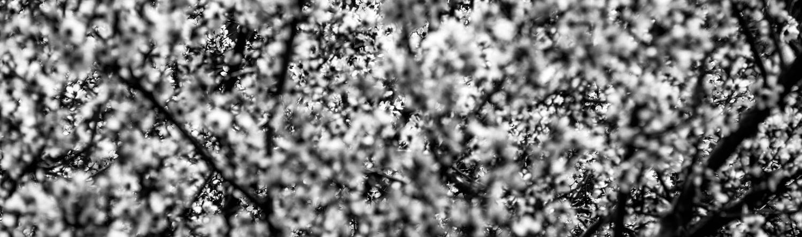 |
|
|
|
Diese Seite ist zur Zeit noch Work in Progress, teils mit Fülltext! die ersten beiden texte sind als einführungstexte
für das magazin videofilmen entstanden und bezogen sich auf videoaufnahmen.
sie sind technisch wie gestalterisch aber auch fotografisch relevant. die weiteren texte entstammen eigener reflexion und
enthalten subjektivere, womöglich abwegigere, spitzfindigere gedanken. Das
perfekte Objektiv Jawohl, es gibt das ideale Objektiv für jede
Filmsituation. Das bedeutet nur leider nicht im Umkehrschluss, dass es ein
einziges Objektiv gäbe, das für jede Filmsituation ideal wäre. Es gibt jedoch
für jede Situation – das heißt jedes Motiv und jede Interpretation dieses
Motivs in eine Filmsequenz – einen bestimmten Bildwinkel, eine bestimmte
Perspektive und eine bestimmte Schärfentiefe, die am geeignetsten sind, die
Situation und ihre Stimmung in ein Filmbild zu übersetzen, das der Erzählung
und dem visuellen Stil des Films am dienlichsten sind. Je nach Objektivtyp, den
Sie einsetzen, verändern sich Bildwinkel, Perspektive und Schärfentiefe. Und
je nach konkretem Objektivmodell verändern sich noch eine ganze Reihe
Subtilitäten. Nun gibt es eine unvorstellbare Zahl
Wechselobjektive auf dem Markt, neu und gebraucht, systemoriginal oder
adaptiert. Und eine fast ebenso große Auswahl an Camcordern, Actioncams oder
Smartphones mit fest eingebautem Objektiv. Sich durch diese ganze Palette zu
arbeiten und Vergleiche anzustellen, um ein ideales Objektiv für eine
Filmsituation zu finden, wäre eine Lebensaufgabe. Da Sie mit Ihrem Leben
womöglich Besseres anzufangen haben, habe ich das für Sie übernommen. 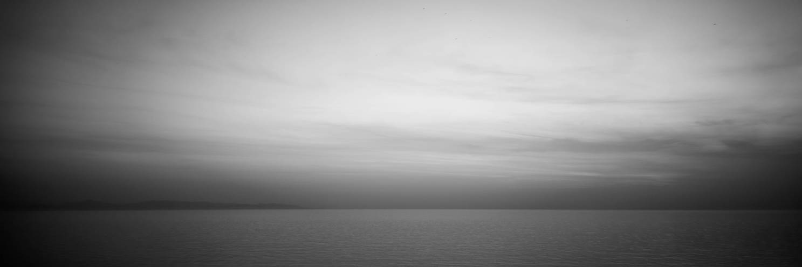 Fest- oder
Wechselobjektiv? Für kreative Indie-Filmer sind digitale
Systemkameras mit wechselbaren Objektiven ein kreativer Segen, nachdem
Camcorder, zuvor das einzig bezahlbare Medium, stark beschränkte visuelle
Ausdrucksmöglichkeiten hatten: Weitwinkel gab es fast gar nicht, außer durch
Vorsatzlinsen mit allerlei optischen Nebenwirkungen. Schärfentiefe gab es
grenzenlose; wer sie für kreativen Ausdruck beschränken wollte wie im
Spielfilm, musste zu abstrusen Bastellösungen greifen. Doch viele von uns sind keine Indie-Filmer,
drehen keine Spielhandlungen mit instruierbaren Akteuren, wiederholbaren
Bewegungsabläufen oder einer Bildsprache von handgehaltenen Wacklern oder
verlorener Unschärfe. Für viele Filmer, oder mindestens für viele Projekte,
ist ein Camcorder, samt fest montiertem Objektiv, noch immer ideale Wahl.
Weil beim dokumentarischen, nicht wiederholbaren Filmen keine Zeit für
Schärfentiefenspielereien bleibt. Weil ein großer Zoombereich Entfernungen
auf Tastendruck überwindet, statt Ersatzobjektive jonglieren zu müssen
während das Motiv verschwindet. Weil ein kompakter Camcorder während einer
Tageswanderung um die Schulter hängt ohne zu belasten. Oder weil ein
Camcorder den Filmer nach harmlosem Amateur aussehen lässt und nicht nach
Profiberichterstatter. Und nicht zu vergessen: weil Camcorder und Actioncams
Bildstabilisatoren von einer Effizienz mitbringen, wie wir sie in
Wechselobjektiven nicht kriegen. Einfluss auf die Objektivwahl kriegen Sie auch
bei einem Gerät mit fest montiertem Objektiv. Zahllose Geräte sind zur Wahl,
vom fixen Ultraweitwinkel einer Actioncam über aktuelle Camcorder mit viel
Weitwinkel bis zu Camcordern mit besonders langen Telebrennweiten am andern
Ende des Zooms, die für Tierfilmer viel komfortabler sind als jede
Systemkamera. Alle Hinweise, welche Brennweiten welche Wirkung auf das Bild
haben, bleiben daher auch für die Auswahl eines Camcorders, einer Actioncam,
einer kompakten Systemkamera oder gar eines Smartphones relevant. Bei allen
kann bei Bedarf zudem mit hochwertigen Vorsatz-Konvertern der
Brennweitenbereich gen Weitwinkel und Tele erweitert werden. 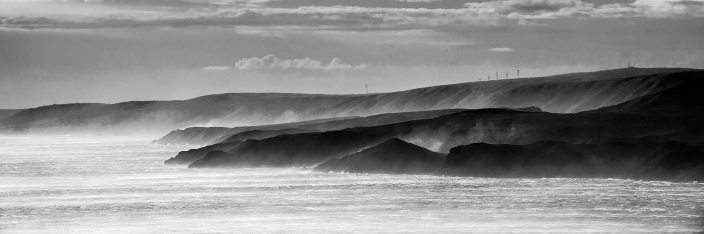 Zoom oder
Festbrennweite? Die alte Fotografenfrage nach Zoom oder
Festbrennweite beschäftigt seit den filmenden Fotoapparaten auch Filmer.
Beachten Sie, wo es um ‚fest‘ geht, ob Brennweite oder Montur gemeint ist:
einmal geht es um ein physisch fest an ein Gerät montiertes, also nicht wechselbares
Objektiv. Wie bei Camcordern mit fest eingebautem Zoomobjektiv kann das aber
durchaus eine Veränderung der Brennweite bieten. Und mal geht es um ein
Objektiv mit nicht veränderbarer Brennweite – es mag jedoch fest in einem
Gerät verbaut sein oder wechselbar, als Systemobjektiv mit Bajonett- oder
Schraubanschluss. Mit einer festen, nicht veränder- oder
‚zoombaren‘ Brennweite, kriegen Sie immer den gleichen Bildausschnitt. Wenn
Sie nur zwei, drei solcher Objektive besitzen, werden Sie schnell lernen, wie
die die Welt sehen. Schon bevor Sie die Kamera ans Auge nehmen wissen Sie
daher, welchen Bildwinkel Sie kriegen werden, und können sich darauf
einstellen und im Kopf das Bild bewusst komponieren. Das ist ein gewaltiger Unterschied dazu, den
Brennweitenbereich eines Zoomobjektivs zu durchfahren und sich im Sucher anzukucken,
was rauskommt. Wenn Sie bewusst komponieren, werden Sie sich unweigerlich
auch bewusst, was das Bild zeigen soll – und was nicht. Dadurch werden
Kompositionen nicht nur visuell dichter, indem Sie sich vorab mit ihnen
auseinandersetzen. Sie werden auch inhaltlich dichter, indem Sie sich vorab
damit auseinandersetzen, was genau Sie erzählen wollen – und wie sie es
zeigen. Der Unterschied klingt marginal, doch ist eminent. Für mich, Kind der Ära Ultrazoom-Camcorder, war
der Sprung zur Festbrennweite dereinst technische Notwendigkeit für ein
Projekt, und mit der Befürchtung behaftet, mich kreativ einzuschränken. Bald
merkte ich jedoch, das Gegenteil ist der Fall: Festbrennweiten haben mich
kreativ befreit. 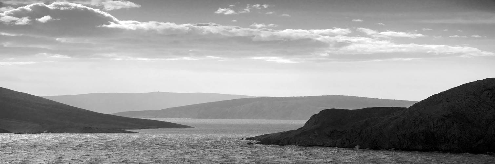 Was
spricht für Zooms? Ein Zoomobjektiv hat gegenüber festen Brennweiten
drei potenzielle Vorteile: Kompaktheit, Reaktionsschnelligkeit und exakte
Komposition. Jedes Zoom erlaubt schnelleres Reagieren als es
durch physisches Objektivwechseln möglich ist. Diese Reaktionsschnelligkeit
ist jedoch, wenn überhaupt, nur für hektische Reportagesituationen relevant.
Meist bleibt Zeit zum Objektivwechseln oder Konverteranschrauben. Nach meiner
Erfahrung löst ein Zoom indes eben aufgrund seiner Reaktionsschnelligkeit
mithin ein Gefühl von Hektik aus, sich eher als Journalist denn Filmer zu
fühlen. Objektivewechseln finde ich demgegenüber entschleunigend. Ein wechselbares Zoomobjektiv ist zwar größer als
eine wechselbare Festbrennweite gleicher Brennweite und Lichtstärke, doch
meist leichter und kompakter als mehrere einzelne Objektive der Brennweiten,
die das Zoom umfasst: ein kompaktes 8o-2oo mm Zoom trägt sich leichter durch
eine Tageswanderung als ein 9o mm plus ein 2oo mm. Wenn Sie beide Brennweiten
nutzen, ist ein Zoom daher eventuell empfehlenswert. Umgekehrt gibt es, wenn
Kompaktheit die Maxime ist, extrem dünne Festbrennweiten, mit denen eine
Kamera in die Jackentasche passt für Barbesuche oder sonstiges
Gelegenheitsfilmen. Kompositorisch sind Sie weniger flexibel als mit einem
Zoom, aber unschlagbar unauffällig. Das dritte Plus für Zooms ist heute weniger
relevant: exakte Brennweitenwahl. Technisch bietet jedes Zoom unendlich viele
Brennweiten zwischen längster und kürzester Brennweite. Als Bildröhren noch
die Größe von Brot hatten, da war es nötig, alles möglichst bildfüllend zu
filmen, weil man es sonst nicht mehr erkannte. Ein Zoomobjektiv hielt da
alles aus dem Bild, was nicht unbedingt rein musste. Heute, mit
Großbildschirmen und Videoprojektoren, können wir zu cineastischen
Kompositionen zurückfinden, die Bildmotiven Raum zum Atmen lassen. Zugleich
haben wir durch Gestaltungsmittel wie selektive Schärfentiefe mit
Festbrennweiten andere, womöglich gar mehr, Gestaltungsmöglichkeiten, den
Blick des Zuschauers zu leiten. Camcorder bringen traditionell riesige Zooms mit;
für Generationen waren Zoomfaktoren (längste geteilt durch kürzeste
Brennweite) auf die Geräte gedruckt statt Brennweiten in Millimetern. Wo
Kleinbild-Fotografen typischerweise 3x-Zooms kriegen (24-7o mm, 7o-21o mm),
selten auch mal 1ox (35-35o mm, 18-2oo mm), da boten Camcorder 25x-Zooms mit
teleskopgleicher Telebrennweite. Doch visuelles Geschichtenerzählen klappt auch
ohne Zoomfahrten, und sogar ganz ohne Brennweitenwechsel. Lang ist
mittlerweile die Liste der Filme, die auf einem iPhone gedreht wurden, oder
auf einer digitalen Systemkamera mit nichtwechselbarer Festbrennweite:
kompakte Kameras mit hochwertigem, lichtstarken Objektiv im leichten
Weitwinkelbereich, jedoch ohne Zoom oder Wechselbajonett, und damit ohne
Möglichkeit (außer durch Vorsatzkonverter), die Brennweite zu verändern. Zwischen ihnen und Camcordern mit Endloszoom
liegen natürlich all jene filmenden Fotoapparate mit Objektivbajonett. An
ihnen lassen sich zahllose Zoomobjektive oder Festbrennweiten je nach
Situation wechseln. Ernsthafte Fotografen und Filmer bevorzugten
traditionell Festbrennweiten-Objektive gegenüber Zooms. Das hat teils
historische Gründe, Zooms verbreiteten sich nämlich erst ab den 196oern (wo
sie so laszive Namen wie Transfokator oder Gummilinse trugen) und brachten
Einschränkungen bei Abbildungsqualität, Lichtstärke und Baugröße mit sich,
die auch heute nicht vollständig überkommen sind Die Abbildungsqualität von Zooms ist, je nach
Brennweitenbereich, seit etwa den 198oern respektabel bis toll, doch die
Spannweite von tollen bis unterdurchschnittlichen Modellen ist größer als bei
Festbrennweiten, was die Auswahl schwieriger und rechercheintensiver macht.
Zugleich wird es immer einfacher und daher erfolgreicher bleiben,
Abbildungsfehler bei einer einzigen Brennweite zu minimieren als bei einem
ganzen Brennweitenbereich. Bei Megazooms wie 28-2oo oder 16-3oo mm müssen gar
optische Gegensätze realisiert werden: Bildkompression via Sammellinsen im
Weitwinkel versus Detailvergrößerung via Streulinsen im Telebereich. Das kann
nicht ohne Verluste gelingen. Je größer der Zoomfaktor, umso
kompromissbehafteter daher grundsätzlich die Abbildungsqualität. Die
Kompromisse werden jedoch mit dem zeitlichen Fortschritt im Objektivdesign
geringer. Die grobe Empfehlung bleibt dennoch, die Leistung
eines Zooms umso kritischer zu prüfen, je extremer es ist: hohe Zoomfaktoren,
Abdeckung von Weitwinkel plus Tele, oder Abdeckung extremer Bereiche wie
Ultraweitwinkel oder Ultratele bergen mehr Potenzial für Enttäuschungen. Je kleiner
der Zoomfaktor, d.h. der umspannte Brennweitenbereich, umso kleiner auch die
Nachteile. Daher gab es schon vor dreißig Jahren tolle 35-7o mm oder 7o-2oo
mm Zooms. Je kleiner der Zoomfaktor, umso weniger Vorteil hat ein
Zoomobjektiv aber auch gegenüber einer Festbrennweite. Ich würde lieber zwei
kompakte Festbrennweiten mitnehmen als ein vergleichsweise wuchtiges 2o- oder
24-35 mm Zoom. Es sei auch gesagt, dass aus heutiger Sicht
gängige Lösungen dereinst extrem waren, sodass Sie für den Fall von Gebrauchtkäufen
auch die Ära des Objektivs berücksichtigen sollten. 1oo-3oo mm-Objektive sind
heute recht normal; 1979 waren sie es, den Leistungen der Modelle dieser Zeit
nach zu urteilen, noch nicht. Die zweite große Einschränkung von Zooms ist die
Lichtstärke. Lichtstärke selbst ist mit hochempfindlichen Bildwandlern heute
zwar kein Kriterium mehr; womöglich aber die resultierende Schärfentiefe. Im
Telebereich ist die Schärfentiefe bei jeder Blende so dünn, dass
Schärfenspielereien möglich sind wo gewünscht. Im Ultraweitwinkelbereich ist
die Schärfentiefe umgekehrt so groß, dass selektives Fokussieren kaum
gelingt, egal bei welcher Blende. Im Bereich dazwischen aber, etwa zwanzig
bis neunzig Millimeter physischer Brennweite, ist der Unterschied zwischen
einer lichtstarken Festbrennweite mit f/1.4 oder f/2 und einem Zoomobjektiv
mit typisch f/2.8 oder gar f/5.6 sehr deutlich sichtbar. Autofokus
oder manuell? Je dünner der Schärfenbereich des Bilds, umso
geringer logischerweise der Toleranzbereich beim Fokussieren. Und je höher
die Auflösung des Filmbilds, codec- und objektivseitig, umso deutlicher sieht
man, wenn der Fokus daneben liegt. Es klingt daher begeisternd: superschnelle
und geräuschlose Ultraschallmotoren führen laut Werbung die Schärfe an jeden
Motivpunkt im Bild und, sollte der sich bewegen, schneller nach als das Auge
kucken kann. Die Realität ist eine andere. Kurz gesagt ist das
Filmen mit Autofokus nicht treffsicherer oder weniger anstrengend als von
Hand, es ist nur anders. Die eigentlichen Motoren, welche die Schärfe
verlagern, sind in der Tat vorzüglich. Die Automatiken aber, welche
ermitteln, wo die Schärfe hin soll und ob sie da ist, sind ihrer
hochkomplexen Aufgabe nicht immer gewachsen. Fürs Auge ist beim Blick durch den Sucher oder
eine elektronische Suchervergrößerung evident, wohin die Schärfe muss und
wann sie da ist. Für die Elektronik nicht. Bei hauchdünner Schärfentiefe ist
dann selbst mit dem kleinsten Messfeld noch genug Spielraum, gerade so
daneben zu liegen und etwa die Nasenspitze statt der Augen anzufokussieren.
Und selbst wenn die Elektronik ins Schwarze trifft, kann die Mechanik am
Objektiv geringfügig dejustiert sein, sodass die Schärfe doch woanders
landet. Anders als das Auge verlässt sich die Elektronik auf eine ermessene Entfernung
und darauf, dass diese der Fokusskala am Objektiv entspreche. Zahlreiche
nicht so recht scharfe Aufnahmen sind daher nicht Produkt schlechter
Objektive, sondern falscher Autofokussierung. Muss beim Filmen die Fokussierung einem bewegten
Objekt nachgeführt werden, vergrößert sich das Problem. Je nach Licht- und
Kontrastverhältnissen springt die Automatik ziellos hin und her. Für
spielfilmgleiche hauchdünne Schärfentiefe braucht es daher noch immer
spielfilmgleichen Aufwand, wo eine Bewegung geprobt und dann exakt wiederholt
wird. Entweder der Autofokus kommt mit. Oder Sie müssen die Bewegung
langsamer machen. Oder von Hand fokussieren. Größere Schärfentiefen sind deutlich
dokumentarfilmerfreundlich. Mit ihnen kommen Sie aber auch von Hand
nachregelnd gut hinterher. So vermeiden Sie zugleich allfällige hässliche
Sprünge der Automatik und kriegen selbst unter sehr ungünstigen Verhältnissen
noch scharfe Bilder. Ist es dem Messsystem nämlich zu dunkel, springt es auch
nur ziellos hin und her. Wobei zu dunkel nicht allzu dunkel sein muss: Vor
Jahren stand ich bei Dämmerung in einem Feld; im Sucher war deutlich, wo die
Schärfe hin müsste, doch die Automatik fand sie nicht und röderte endlos hin
und her. Hätte ich nicht irgendwann manuell eingegriffen, stünde ich heute
noch da. Das muss man sich mal vorstellen: Jahre in einem Feld stehen! Was
einem da für Bärte wüchsen! Für geräuschsensible Drehs sei auch darauf
hingewiesen, dass kein Autofokus völlig geräuschlos ist. Ultraschallmotoren
selbst sind es, doch da im Innern immer noch Tuben verschoben werden müssen,
gibt es ein Schabegeräusch. Beim Dreh nehmen Sie das womöglich kaum wahr;
umso ärgerlicher ist dann, dass ein Kugelkopf- oder kamerainternes Mikrofon
es an stillen Orten mit aufzeichnet. Spezielle
Cine-Objektive für Filmer? Zahlreiche Hersteller bieten Varianten ihrer
Wechselobjektive in speziellen, fürs Filmen optimierten Fassungen an, so
genannte Kino- oder Cine-Objektive. Für gewöhnlich bedeutet das eine
stufenlos verstellbare Blende, weitläufige und mit Zahnrädern versehene
Schärfen- und gegebenenfalls Zoomräder, und eine Angabe der Lichtstärke in T
statt f/. Spielfilmer haben an solchen Finessen ihre
Freude. Für den dokumentarischen Filmer dagegen sind sie weniger relevant.
Eine feinfühlige Fokussiermechanik will er bei Manuellfokusobjektiven
natürlich auch. Die bietet indes jedes vollmanuelle Objektiv, das heißt jedes
Objektiv ohne Autofokus. Die Mechanik in Autofokus-Objektiven ist auf kurze
Verstellwege ausgelegt, damit die Automatik schnell agieren kann. Bei
manuellem Handling reduzieren solch kurze Wege aber die Präzision. Die Zahnräder außen an Cine-Objektiven erhöhen
aber nicht die Präzision, sie erlauben nur den Einsatz eines externen
Zahnradwerks, mit dem ein Kameraassistent die Einstellung auf vorher
festgelegte Marken vornehmen kann. Für Spielfilme ist das fantastisch:
zwanzig Takes, zwanzig exakt gleiche Schärfenverlagerungen. Dokumentarfilme
aber haben nur einen einzigen Take – und meist keinen Assistenten. Für sie
ist die ‚gewöhnliche‘ Variante eines Objektivs sinnvoller. Extrem lange
Einstellwege sind je nach Brennweite und je nach Drehsituation sogar
hinderlich; Wer aus der Hand filmt, ohne Assistenz, muss mit einer Drehung
des Handgelenks den ganzen Fokusbereich durchfahren können. Nachfassen würde
nämlich zu Verwackeln führen. Eine Ausnahme stellen Teleobjektive mit extrem
geringer Schärfentiefe und daher extrem exakten Fokusanforderungen dar; sie
können Sie wegen Verwackelns indes ohnehin nicht aus der Hand führen. Bedenken Sie, dass Cine-Varianten von Objektiven
aufgrund ihrer Mechanik schwerer sind, was beim dokumentarischen Filmen
wörtlich ins Gewicht fällt. Unterschätzen Sie das nicht! Eine stufenlos (und damit auch geräuschlos)
verstellbare Blende dagegen ist nett. Helligkeitsübergänge von Innen- zu
Außenaufnahmen gelingen so sanft. Die Blende fest belassen und der Kamera die
Belichtung anzuvertrauen, bewirkt indes das gleiche. In Verbindung mit automatischer Belichtung lässt
sich durch manuelles Schließen der Blende aber auch die Schärfentiefe im Bild
verändern! Statt den Fokuspunkt von einem Motivdetail auf ein anderes in
anderer Entfernung zu verlagern, wird ohne Fokusänderung die Blende
geschlossen und beide Motivdetails werden scharf! Langsam mit einer
stufenlosen Blende ausgeführt, bleibt das Bild durch die nachregelnde
Belichtungsautomatik konstant hell. Die eigentliche Optik, die Glaslinsen im Innern,
welche das Bild ergeben, ist bei Cine-Objektiven die gleiche wie bei der
gewöhnlichen, fotografischen Variante. Sie zahlen, auch den geringeren
Stückzahlen geschuldet, bei der Cine-Variante einen Aufpreis ausschließlich
für mehr Mechanik, nicht für ein besseres Bild. Kuriosum von Cine-Objektiven ist, dass die
Lichtstärke nicht in Blenden angegeben wird, also mit f/ bezeichnet, sondern
in Transmissionswerten, mit T bezeichnet. Der f/-Blendenwert ist ein
mathematischer Wert: der physische Durchmesser der Blende in Millimetern.
Angegeben wird er aber in Relation zur Brennweite und daher mit f/, also
„Brennweite geteilt durch“; da Blendendurchmesser und Brennweite in
Millimetern gemessen werden, entfällt durch die Division die Maßeinheit. Als
Vergleichsgröße wird der Blendenwert nur durch Standardisierung (f/2, f/2.8,
f/4, …) relevant. Die Transmission dagegen ermisst den
tatsächlichen Lichtdurchlass eines Objektivs, das heißt abzüglich
Rundungsfehlern beim Rechnen, und abzüglich der Lichtmenge, welche die
Glaslinsen im Innern schlucken. Daher ist der T-Wert immer ein wenig kleiner
als der f/-Wert. Praxisrelevant war das dereinst fürs manuelle Belichten von
Zelluloidfilm, wo geringste Helligkeitsunterschiede von ein paar
Zehntellichtwerten die Dichte und damit den Look des Films sichtbar
veränderten, erst recht im Wechselschnitt mit anderen Objektiven. Heute, auf
Video, mit Live View, automatischer Belichtung und digitaler Bildkorrektur,
sind solche Nuancen irrelevant. Meine Meinung: kaufen Sie gute, vollmanuelle
Objektive. Das Canon-FD-System wird immer wieder lobend beschrieben für
Haptik und Optik, und ich schließe mich an. Investieren Sie die Ersparnis
gegenüber Cine-Objektiven in Reisen zum nächsten Filmprojekt, oder in
Gummibärchen. 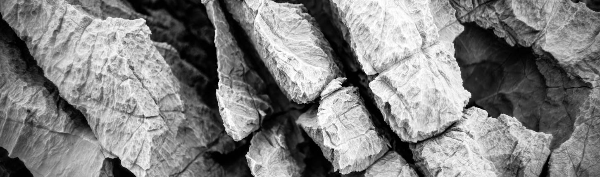 Das perfekte
einzige Objektiv …gibt es nicht. Wohl aber eins, mit dem Sie
mindestens 8o % Ihrer Aufnahmen abdecken können ohne jedes Verlangen nach
Mehr. Welches das für Sie ist, werden Sie mit einiger Praxis rausfinden. Einfache Zoomobjektive, wie sie vor allem billigen
Kameras zuhauf beigegeben werden, sind für echte Schärfentiefen-Spiele
ungeeignet. Ihre Anfangsblende ist zu klein, ihre Schärfenbereiche also sind
zu groß, um im Weitwinkel noch genug Freistellwirkung zu erzielen. Ihre
Bildqualität ist zudem oft unterdurchschnittlich. Weil Sie im Gebrauchtmarkt
für wenig Geld tolle Alternativen kriegen, gibt es keinen Grund, sich an
solche Objektive zu klammern. Leisten Sie sich stattdessen eine gute
Festbrennweite. Die hat bei gleicher Preisklasse konstruktionsbedingt eine
bessere Abbildungsleistung als ein Zoom. Fotografen ermöglicht das größere
Abzüge, Filmer dagegen erhalten selbst bei mäßiger Wiedergabegröße eine
herrlich plastisch wirkende Trennung von scharfem Hauptmotiv und unscharfem
Hintergrund. Außerdem haben Festbrennweiten meist größere Anfangsblenden, um
die Schärfentiefe bei Bedarf auf ein Minimum zu reduzieren oder bei Dämmerung
mehr Licht durchzulassen. Und für fast alle Motive reicht ein einziges
Objektiv: effektive 35 mm Brennweite und Blende f/2.0 ist alles, was Sie
brauchen. Für eine Kamera mit 1.5x Verlängerung nehmen Sie also ein 24 oder
28 mm-Objektiv. Es wird Ihnen erfahrungsgemäß gut 80% Ihrer
Aufnahmesituationen abdecken. Erst, und wirklich erst, wenn Sie merken, dass
das 35er nicht mehr ausreicht, denken Sie darüber nach, warum nicht. Weil Sie
nicht weiter zurück können, aber eine Übersichtsaufnahme wollen? Weil Sie
nicht mehr näher dran können, aber eine Großaufnahme wollen? Dann, und erst
dann, sind Sie reif für den Kauf Ihres zweiten Objektivs. Infrage kommt als
Weitwinkel-Ergänzung der vorhandenen 35 mm der Bereich von effektiv 2o bis 14
mm (was bei 1.5x Verlängerung physische Brennweiten von ca. 9-15 mm wären).
Im Telebereich bieten sich 75 oder 90 mm, bei 1.5x Verlängerung also physische
50 bis 60 mm, an. Wollen Sie noch mehr Tele, wählen Sie effektive 200 oder
300 mm. Ersteres bekommen Sie an einer 1.5x-Kamera zum Beispiel mit realen
135 mm Brennweite, wo Sie die Wahl aus Kompaktheit oder Lichtstärke haben: es
gibt kleine 135er-Objektive mit Blende f/2.8, was wegen der langen Brennweite
trotzdem eine tolle Freistellung gestattet. Oder lichtstarke Modelle mit
Blende f/1.8 oder f/2.0 für Theateraufnahmen in reinster Form. Noch längere
Objektive werden Sie, wenn Sie nicht grade Naturfilmer sind,
unverhältnismäßig teuer bezahlen und am Ende kaum je mitnehmen. Ein 400 mm
f/2.8 einen Kilometer auf der Schulter zu tragen, ist wirklich, wirklich
unangenehm. Wirklich. Zu viel Equipment lenkt ohnedies von der Kunst
ab. Wollen Sie nun das 21 mm ansetzen, oder vielleicht das 24 mm, oder
vielleicht doch das 18 mm? Diese Frage wird sich in der Praxis nie stellen,
auch bei einem Spielfilmdreh, wo jede Szene vorbereitbar ist. Leihen Sie alle
drei Brennweiten vor einem Kauf aus, machen Sie einen Tag lang
Vergleichsaufnahmen an Ihren typischen Motiven, und kaufen Sie dann eine
davon. Wenn Sie deren Abbildungseigenschaften dann blind kennen, nützt Ihnen
das beim Dreh mehr als ein Rucksack voll Alternativen. Ich selbst bringe,
wenn ich unbegrenzt viele Objektive mithaben darf, drei: 18 mm, 35 mm, 90 mm.
Diese Auswahl ist aus der Erfahrung gewachsen; ich kenne jedes Objektiv genau
und weiß, wie ich es einsetzen kann und was es mir liefert. In dieser Auswahl steckt auch eine große
Wahrheit, die sich über die Jahre immer wieder bestätigt hat: es reicht
völlig, die jeweils doppelte Brennweite als nächste Brennweite zu haben. Wenn
Sie als ein 35er besitzen, brauchen Sie vermutlich kein 5oer. Ein 75er, 85er
oder 9oer ist viel hilfreicher. Dito im Weitwinkel: ein 24er sieht die Welt
genau wie ein 35er, nur mit etwas mehr Umsicht. Ein 21er oder 18er dagegen
tut wirklich neue Sichten auf! Spezialobjektive schließlich, wie Fisheyes,
Ultraweitwinkeln, Makros, Ultrateles, oder Shift-Objektive mit
verschwenkbarer Bildebene, haben oft mehr Besitzreiz als Nutzwert. Ich selbst
jedenfalls habe sie über die Zeit fast alle wieder verkauft. Ein Skaterfreund
andererseits nutzt fast nur das Fisheye. Es ist Teil seines Stils geworden
und für ihn das, was für mich das 35er ist. Gut so. Dasselbe gilt vielleicht
für Sie, wenn Sie gerne Bienen auf Blumen filmen und dafür ein Makro-Objektiv
kaufen. Dann haben Sie die Königsklasse erreicht: den eigenen Stil, und die
echte eigene Objektivauswahl, die aus Bedarf und Überlegung erwachsen ist.
Bis da hin ist der Weg weit, aber zum Glück helfen Verleihservices und der
Gebrauchtmarkt, ihn zu beschreiten. Wenn Sie nun ein 35 mm f/2-Objektiv kaufen
möchten, besehen Sie sich doch mal den King. So nennen Bokeh-Anhänger das
Leica Summicron-M in der vierten Version aus den 1980ern – weil es die
schönste Unschärfenabbildung aller Objektive hat, auch der nachher gebauten.
In der Tat, was diese Linsen bei Offenblende zum Schmelzen bringen, ist
feiner als belgische Schokolade. Allerdings kostet es gebraucht über tausend
Euro und passt wegen seines kleinen Auflagemaßes nur an System- und
Messsucherkameras. Suchen Sie Objektive für Spiegelreflexen, werden
im R-System von Leica und im FD-System von Canon fündig. Die dortigen 35/2
stehen dem King kaum nach. Und liefern den Beweis, dass Blende f/2 mehr als
ausreichend ist für Unschärfenspiele. Vor allem aber setzen diese Objektive
der Unschärfe auch wirklich Schärfe entgegen. Einfach Kit-Objektive für
Einsteiger-Kameras sind kostengünstig, haben aber eine geringere
Schärfenleistung: Der Hintergrund zerfließt zwar mehr oder weniger und
vielleicht ist auch das Bokeh noch akzeptabel. Der anfokussierte Vordergrund
aber ist vor allem bei Offenblende nicht knackscharf, die Abbildung darüber
zweidimensional, wenig plastisch und der Kontrasteffekt aus Unschärfe und
Schärfe zunichte. Das ganze Bild wirkt leicht defokussiert. Beide Systeme, Leica R und Canon FD, ist neu
nicht mehr erhältlich. Seine Objektive finden sich aber zahlreich,
erschwinglich und wertstabil im Gebrauchtmarkt. Mit Adaptern passen sie an
praktisch alle filmenden Kameras (Leica R lässt sich wegen Auflagemaß nicht
an Nikon-Spiegelreflexen adaptieren; Canon FD nicht an Canon-EF- und
Nikon-Spiegelreflexen). Für Nikon, Canon EF, und via Adapter für alle anderen,
gibt es eine dritte Alternative: manuelle Nikon Ai- und AiS-Festbrennweiten.
Vom Fisheye bis zum Ultratele decken sie jeden Bereich in fast jeder
Lichtstärke ab und sind gebraucht ebenso. An moderne Nikon-SLRs passen sie
ohne Adapter. Online-Fotoportale wie Flickr halten
Bildbeispiele fast jeden Objektivs, die etwa zeigen, dass das legendär
lichtstärkste Leica Noctilux 50 mm f/1.0 kein besonders schönes Bokeh hat
oder das 50 mm f/1.2 von Nikon bei Offenblende nicht besonders scharf ist. So
können Sie sich vor einer Kaufentscheidung schnell einen ersten Überblick
verschaffen. Vielleicht suchen Sie ja grade nach einem Objektiv mit
charakteristischer Unschärfenabbildung? Sehen Sie sich das Canon 50 mm f/0.95
aus den 1960ern an. Es passt nur an Systemkameras, kostet knapp zweitausend
Euro und ist nicht sehr scharf. Aber eine sehr eigenwillige Abbildung hat es. Falls Sie mehrere Objektive einsetzen, ist
ratsam, sie aus demselben System zu nehmen, um das Handling zu erleichtern.
So fokussiert man bei Nikon in umgekehrte Drehrichtung zu Canon, und bei
Leica schraubt man andersrum an... Und bitte nehmen Sie vollmanuelle
Objektive. Sie bieten ein viel exakteres Gefühl fürs Schärfenziehen, weil ihr
Fokussierweg deutlich länger ist als der eines Autofokus-Objektivs, wo der
Motor zum Scharfstellen möglichst kurze Wege zurücklegen soll. Einhellige Meinung der Bokeh-Jäger ist außerdem,
dass moderne Objektive nicht schöner abbilden als zwanzig Jahre alte. Bokehs
moderner Rechnungen sind härter, wenn auch nicht hässlicher: sie erzielen
eine klarere Abstufung scharf-unscharf, aber einen weniger fließenden
Übergang: ein zumindest unnatürliches „Poppen“ in die Schärfenebene ist zu
sehen statt dem weichen Verlauf, den wir auch mit dem Auge wahrnehmen. 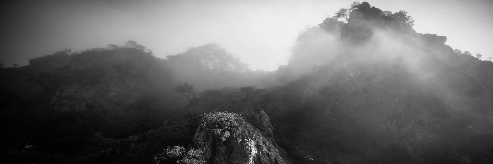 Kreativ
mit Objektiven Wechselbare Objektive tun an Systemkameras große
Gestaltungsfreiheit auf. Abseits des konventionellen und teuren
Zubehörprogramms hat sich Ihr ergebener Autor nach Inspirierendem umgesehen
und zeigt, was die aus Ihrem Video machen können Das Objektiv macht das Bild. So einfach ist das.
Egal, wie viele Pixel der Sensor dahinter daraus macht und wie viel
Kontrastumfang er zeigt – ein sauberes Bild kann er nur zeigen, wenn das
Objektiv es liefert. Wer seine Ausstattung perfektionieren will, decke daher
die Objektivwahl ab. Das Ergebnis ist zumeist sichtbarer als der Wechsel
einer Kamera, hochwertige Objektive zudem wertstabil. Nebenbei macht ein satt
laufendes vollmechanisches Objektiv viel mehr Spaß im Einsatz als ein
billiges Plastikteil. Weder für Ergonomie noch für scharfe Abbildung
oder charakteristischen, filmhaften Bildlook braucht es teure Exotenlinsen.
Erhabenes und Erhebendes finden Sie gebraucht ab 1o €. Ein Helios 44 zum
Beispiel, ein 58 mm f/2-Kleinbild-Fotoobjektiv, das die Schärfe jedes
Kit-Zooms erreicht und Unschärfenbereiche herrlich verwischt. Falls Sie beim
Kamerakauf vor der Entscheidung stehen, 1oo € für ein Plastikobjektiv
draufzulegen: Nehmen Sie das Helios stattdessen! Für 5 € kriegen Sie einen
Adapter, der das M42-Objektivgewinde an jedes moderne Kamerabajonett fügt.
Einziger Nachteil: an kleinen Bildwandlern ist die Brennweite recht lang. Lösung: ein 35 mm f/2, 28 mm f/2.8 oder gar ein
17 mm f/4, wie es sie für wenig mehr ebenfalls zahlreich mit M42-Gewinde
gibt. Spiegellose Systemkameras nehmen auch Objektive nicht mehr
gebräuchlicher Spiegelreflex-Fotosysteme wie Canon FD oder Minolta MD auf:
Während etwa alte Nikon-F-Objektive an moderne Nikon-Spiegelreflexen passen,
haben Canon, Minolta und andere in den 198oern mit Einführung von Autofokus
profitwirksam die Bajonette gewechselt. Alte Objektive waren nicht mehr
nutzbar und sind heute billig zu haben. Nicht jedes Vintage-Objektiv überzeugt an
digitalen Kameras. Je weitwinkliger, desto kritischer. Farbsäume, Unschärfen
am Bildrand oder mangelnde Abbildungsschärfe können auftreten. Tipp: Haben
Sie ein Modell ins Auge gefasst, suchen Sie mal online danach. Oft finden Sie
Testaufnahmen oder gar Erfahrungsberichte, etwa bei systemkamera-forum.de. Bevorzugen Sie feste Brennweiten, sie bilden
schärfer ab als Zooms. Das wird sich nie ändern, der Unterschied war vor 3o
Jahren aber noch sichtbarer als heute. Zudem sind Festbrennweiten kompakter
und/oder lichtstärker. Wählen Sie vollmanuelle Objektive ohne Autofokus
oder Computerblende. Ihr Handling ist fürs Anfassen optimiert, was viel
satteres und exakteres Schärfenziehen ermöglicht. Moderne Objektive bilden
nicht schöner ab als zwanzig Jahre alte und meist auch nicht schärfer: Außer
am preislich oberen Ende kamen Fortschritte dem Preis statt der Leistung
zugute. Zudem entfallen elektrisch gesteuerte Funktionen, sofern Sie nicht
spezielle Adapter verwenden, die sie übersetzen. Falls ein Objektiv keinen
mechanischen Blendenring hat, bleibt die Blende dann offen. Leben ohne Zoom – geht das? Ja! Camcorder mit
zehn- oder zwanzigfachem Zoomfaktor machen Zoomfahrten als Effekt möglich.
Ein 18-55 mm mit also Zoomfaktor 3x sieht blasser aus. Gestalterisch hat eine
Zoomfahrt in den meisten Videos mit ihrer sehr unnatürlichen Sehweise keinen
Platz und passt nur in abstrakte oder suggestive Momente. Der andere Vorzug des Zooms, exakt den
Bildausschnitt festzulegen, ist keiner. Er verleitet dazu, den Zoombereich zu
durchfahren und zu sehen, was gut aussieht. Feste Brennweiten lernen Sie über
die Zeit kennen und können einschätzen, wie sie die Welt sehen, bevor Sie
durch den Sucher kucken. Damit sind Sie näher am Kreativen Prozess des
Filmens: Sie werden sich ganz natürlich mit der Szene und ihrer visuellen
Gestaltung auseinander setzen und aktiv entscheiden, was ins Bild gehört und
was nicht, statt sich anzusehen, was der Camcorder anbietet. Nicht umsonst
ist das Zoomobjektiv für Reportagefotografen entwickelt worden. Und was ist mit Bildstabilisatoren? Die
funktionieren leider nur für Fotografen. Heutige Bildstabilisatoren in
Foto-Objektiven wurden für Foto-, nicht Video-Aufnahmen entwickelt und
reichen noch immer nicht an die Bildruhe von Camcorder-Stabilisatoren heran.
Das wird sich in vielen Jahren vielleicht geändert haben. Heute sind
stabilisierte Fotoobjektive für den Filmer eher nachteilig, da teuer und
meistens lichtschwächer, indem kleinere Linsen leichter stabilisierbar sind.
Kamerainterne Stabilisierungen, wie es sie seit einigen Jahren gibt, haben
für den Filmer leider auch nicht viel verändert. 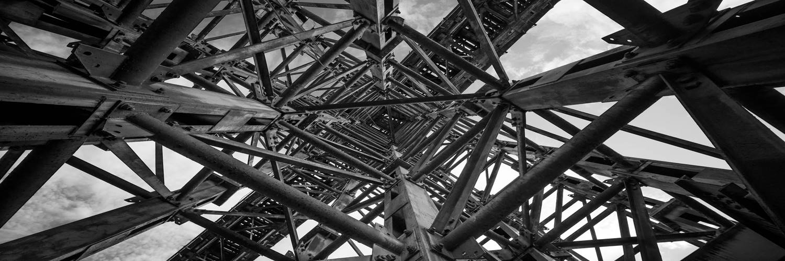 Objektive
adaptieren Ob Sie Erlauchtes oder Billiges suchen – auf
digitalen Flohmärkten finden Sie unendlich viele mehr oder wengier alte
Objektive. Passen die an Ihre Kamera? So finden Sie’s raus: Die meisten
gehören einem System an, etwa Nikon F oder Leica R oder Leica M. Kennen Sie
das System nicht, lassen Sie es besser, oder vereinbaren Sie ein
Rückgaberecht. Es wäre möglich, dass das Objektiv an Ihrer Kamera nicht auf
Unendlich fokussiert oder nicht die volle Sensorfläche ausleuchtet und so
schwarze Bildränder zeigt. Finden Sie das System, dem Ihr Objektiv
entstammt, in der Tabelle. Liegt Ihr Kamerasystem in der Tabelle darunter,
sieht es gut aus. Zwischen den Auflagemaßen von Objektiv- und Kamerasystem
braucht es noch einen knappen Millimeter Platz für einen mechanischen
Bajonettadapter, sonst fokussiert das Objektiv nur im Nahbereich.
‚Auflagemaß‘ bezeichnet nur die Entfernung hinter dem Bajonett, in der der
Sensor liegt und das Objektiv sein Bild projiziert. Es ist für jedes System
normiert. Achten Sie beim Adapterkauf trotzdem auf
Unendlich-Fokussierung: Für Makro- oder Astroaufnahmen gibt’s extra dünne
Adapter, die lediglich Bajonette zusammenfügen, ohne unterschiedliche
Auflagemaße zu korrigieren. Passen die Auflagemaße, ist gewöhnlich auch der
Bildkreis kein Problem, also der Durchmesser des erzeugten Bilds.
Fotoobjektive aus Kleinbild-Systemen leuchten Sensoren bis zum Vollformat
aus. Seit es digitale Spiegelreflexen gibt, haben einige Hersteller aber
Objektive mit kleinerem Bildkreis für das gleiche System im Programm. Den
Unterschied verraten nur kryptische Kürzel wie DX, DC oder EF-S. Seien Sie
für Vollformat-Kameras auf der Hut. Besonders fies: Arri PL nutzt dasselbe
Bajonett für Super35-Objektive, die APS-C-Sensoren ausleuchten, und
Super16-Objektive mit viel kleinerem Bildkreis. Da hilft nur nachfragen,
gugeln oder ausprobieren. Festbrennweiten lassen bei moderater Baugröße
mehr Licht durch, erheblich mehr als Kit-Zooms. Das ist toll für Aufnahmen
bei Schwachlicht; vor allem bringt mehr Licht aber mehr
Hintergrund-Unschärfe: Je weiter die Blende geöffnet wird, das ist Physik,
umso kleiner wird der scharfe Bereich vor und hinter der anfokussierten
Entfernung, die so genannte Schärfentiefe, und umso weicher verschwimmen unscharfe
Bildbereiche. Ein 18-55 mm-Kitobjektiv hat eine größte
Blendenöffnung von f/5.6. Mit dem Helios kriegen Sie Blende f/2 – drei Stufen
mehr oder das Äquivalent zu einem Sprung von ISO 1oo zu 8oo. Mit anderen,
wenig teureren 5o mm-Objektiven kriegen Sie sogar Blende f/1.4, noch eine
Stufe mehr. Wer hauchdünne Schärfentiefe will, jenen Effekt
des Jahrzehnts, an dem man sich langsam sattgesehen hat, der braucht
möglichst lichtstarke Objektive. In den letzten Jahren schossen zahllose
f/o.95-Objektive aus dem Boden. Zweifellos liefern die nette
Videos und sind schön zu bedienen, mit mehreren hundert Euro aber auch nicht
billig. Zumal die moderate Schärfentiefe etwa des Helios mit f/2 für die
meisten Anwendungen, auch gestalterisch anspruchsvolle, ausreicht. 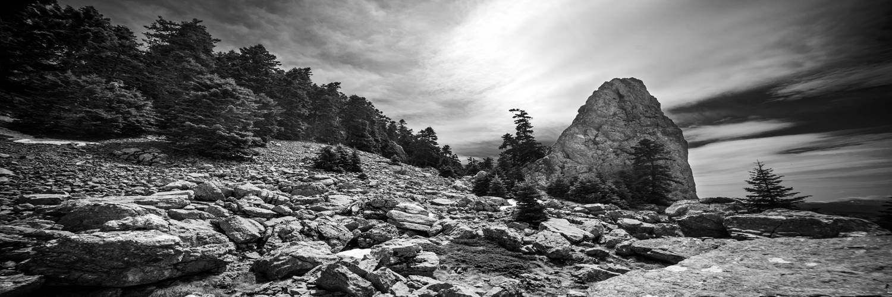 Mehr zufällig fiel mir ein Spielzeug aus Fernost
in die Hände, ein C-Mount-Objektiv, für Überwachungskameras gebaut. Es steht
zwar 25 mm f/1.2 drauf, doch was heißt das? Es wird den Sensor einer
APS-C-Kamera nicht komplett ausleuchten, soviel war klar, es würde also
schwarze Ränder erzeugen, und vermutlich ein minabel-matschiges Bild. Aber es
kostet nicht viel und vielleicht kann man, mit überzogenen Kontrasten in der
Bearbeitung, ein paar Zwischenbilder damit erzeugen. Erste Erkenntnis: das Objektiv fokussiert auf
unendlich! Positive Überraschung. Zweite Erkenntnis: es fokussiert auch nah. Extrem
nah. Am nächsten Tag steht ein Fotoprojekt an. Ein Mädchen in einem Zimmer,
und sie erzählt, dass sie Kaugummiblasen machen könne. Klasse, denke ich ob
einer Kunst, die ich nie erlernt habe, und bringe eine Packung extraklebrigen
Kaugummi mit, meine teuren Objektive – und meinen Neuerwerb. Nur um mal zu
sehen. Die schwarzen Ränder sind prominent. Ich muss mich ermahnen, das Bild
mit genug Luft zu komponieren, auf dass es sich beim
Bearbeiten zuschneiden lasse. An einer Micro Four Thirds-Kamera gäbe es
dieses Problem nicht: der kleinere Bildwandler wird komplett ausgeleuchtet. Abends sehe ich mir das Material an. Die
schwarzen Ränder sind schnell weggeschnitten. Was übrig bleibt, wird zum
Bildrand hin immer weicher: das Objektiv hat in der Bildmitte einen anderen
Fokuspunkt als am Rand. Dann sehe ich mir die Bildmitte an, und sie ist
rattenscharf. Indes nur auf der Breite eines Kopfs, bevor die Randunschärfen
anfangen. Das wäre auch bei einem kleineren Sensor nicht anders. Ich nehme es
hin und freue mich am grandiosen Portraitlook. Erst viel später lerne ich auch die
Randunschärfen zu schätzen. Nicht nur weil sie eben Teil des Looks des
Objektivs sind. Sie schaffen eine andere Erzählung, fokussieren den Blick.
Sie sehen die Welt subjektiv, ein bisschen wie das Auge mit scharfem Zentrum
und vager Umgebung. Eine Reise durch die Türkei steht an, ich packe.
Objektive: das 35 mm, klar, das 12 mm, auch klar… und bis zur Abreise lege
ich es mal dazu, dann wieder nicht, und nehme es am Ende doch mit, das kleine
25 mm. Am Ende mache ich fast die Hälfte meiner Aufnahmen damit. Warum? Weil es irgendwie Spaß macht. Macht es so
gute Bilder wie meine teuren Leicas? Der weitere Bildwinkel gegenüber des 35
mm, dessentwegen ich es eigentlich erstand, geht fast völlig durchs
Abschneiden der schwarzen Ränder verloren. Vielleicht erlaubt die Kompaktheit
des 25 mm ein anderes Arbeiten, doch verschreckend klobig ist mein 35 mm f/2
mit seinen drei mal fünf Zentimetern nun auch nicht. Vielleicht ist es der
Fun-Faktor, der unseriöse Look, den man als Filmer mitbringt, wenn man mit
diesem Stupsnasenobjektiv auftritt und damit ungefährlich-entspannt aussieht.
Oder es ist der einwillige, subjektive Bildlook, den es erzeugt. Nach der
Tour jedenfalls bin ich nicht nur vom Gefühl beim Einsatz, sondern auch den
Ergebnissen angetan. Und dann landen zwei Fotos auf einem
Zeitschriften-Cover, und es mag Zufall sein, doch beide sind nicht mit den
teuren Objektiven gemacht. Sondern mit dem kleinen Spielzeug aus Fernost.
Vielleicht des Bildlooks wegen? Jedenfalls sehen die Aufnahmen auch gedruckt
und 12 x 2o cm groß toll aus, rattenscharf. 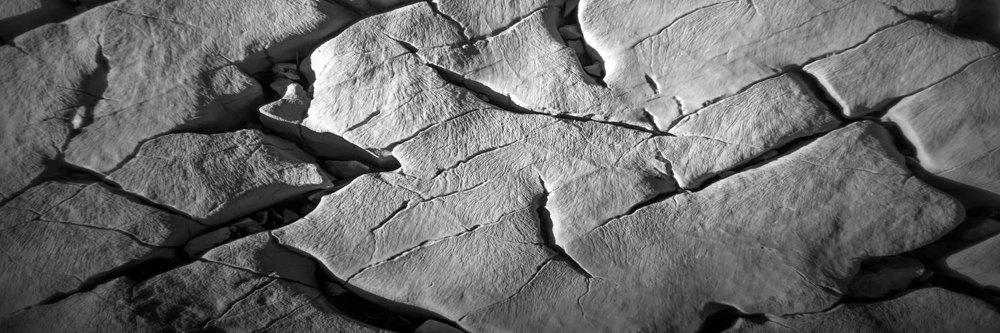 Ziele a) erkunde unbekannte brennweiten -> finde
darüber die besten brennweiten für dich, und die beste realisierung dieser in
konkreten objektiven (haptik, bildlook, gewicht, größe, …) b) erkunde die erzählerischen möglichkeiten von
objektiven - bestimmter brennweiten („wie wirkt 135 vs. 2oo
mm“) - charakteristischer abbildung („wie ändert ein
petzval die bildwirkung“) 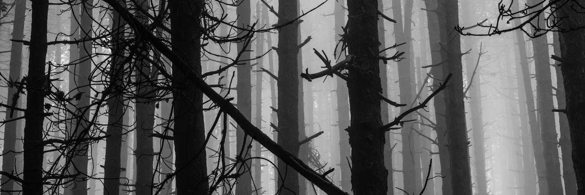 c) optimiere, reduziere! „if in doubt, don‘t!“ ja, man könnte ein 12er und ein 15er und ein 17er
zwischen 1o mm und 21 mm drücken – doch wozu?! ebenso könnte man ein 5o und
ein 75 zwischen 35 und 85 drücken – und ebenso: wozu?! beides mal ist aus
einem guten, scharfen weitwinkligen objektiv ein ausschnitt machbar, falls
bedarf (und nichts anderes als gutes, scharfes wollen wir)! und: je weniger zeug, umso einfacher das
handling, und umso weiter kann man wandern, und umso intimer interagieren. ist lichtstärke hierzu eine ausnahme – wegen
freistellung, d.h. indem bspw. ein 28/1.4 mehr freistellung bietet als ein
21/1.4, sodass zwar aus dem 21er ein ausschnitt mit dem bildwinkel eines
28ers machbar ist, aber dieser ausschnitt deutlich weniger freistellung
zeigen wird? ja. es ist aber nicht praktikabel, einen satz aus 14/1.8,
2o/1.4, 21/1.4, 24/1.4, 28/1.4, 35/1.4, 5o/1, 6o/1.2, 75/1.2, 85/1.2, 9o/1.5
98/1.4 und 1o5/1.4 rumzutragen. auch eine entschlackte variante davon ist
noch zu viel: etwa 21/1.4, 35/1.4, 5o/1, 85/1.2 (bezogen auf vollformat).
allein schon weil unklar ist, welche brennweite jeweils die ideale ist, und
man darüber den moment mit objektivewechseln verbringt statt mit präsentsein.
worüber wir wieder am anfang sind: verschiedene
lösungen ausprobieren, um das optimum zu finden! auf diesem weg haben wir
beispielsweise bereits 24, 28 und noch ein paar eliminiert – warum also nicht
weiterführen und zwischen 5o, 6o, 75 und 85 evaluieren! zuerst nach den
eigenen erfordernissen, und dann nach den antworten der industrie auf diese
erfordernisse: 6o mm ist dann als brennweite schon mal raus,
denn außer einem konica hexanon gibt es nichts, und das hexanon ist ein
sammlerstück zu fantasiepreisen, das zudem, unabhängig vom preis, keinen
appeal hat, egal worin: nicht das schnellste, nicht das schärfste, nicht das
kompakteste, nicht das charakteristischste. sodass am ende die grössere frage
75 vs. 85 mm bleibt. und die kleinere, falls 75 mm, welches 75 mm-objektiv
das wäre. das voigtländer 75/1.5 für leica überzeugt mich zum beispiel
partout nicht, es zeigt keine freistellung/plastizität. Leicas eigenes
summilux 75/1.4 ist ebenso ein sammlerstück und verhält sich (optisch sowie
appealmäßig) wie das 6o/1.2: beide sehen aus wie f/1-noctiluxe mit
telekonvertern dran, sind nicht die schärfsten, nicht sehr kompakt, nicht
überaus charakteristisch, und eigentlich keine verbesserung gegenüber dem
legendären f/1-noctilux. das moderne leica 75/1.25 ist viel zu groß, schwer
und teuer. so bleibt das chinesische 7artisans 75/1.25 und das japanische ms
optics sonnetar 73/1.5, welche indes offen beide stark überstrahlen und
keinen rechten freistelleffekt bieten (das ms ist, wenn auch nicht kompakt,
so wenigstens leicht). alle 75er mit f/2 und langsamer sind irrelevant, wenn
wir auf der suche nach freistellung sind. und indem insbesondere das ms
effektiv erst bei f/2 überzeugt, ist es somit auch raus aus unserer suche. dann bleibt von allen obigen erwägungen nur noch
die frage: dem 7artisans 75/1.25 einen versuch geben? eine frage, welche sich
nach evaluierung von testbildern beantwortet: es erschafft nicht die
plastizität eines 85/1.2, nicht dessen schärfenvorhang, und wenn ich lese, es
sei ob mangelnder offenschärfe sehr schwer zu fokussieren, fühle ich mich an
voigtländers 35/1.2 erinnert: eine tolle idee, deren eckdaten
habenwill-gefühl auslöstt – doch in der praxis hat mich das 35/1.2 in beiden
versionen enttäuscht und kam darüber kaum je zum einsatz. so dürfte es sich
mit dem 75/1.25, schätze ich, auch verhalten. zudem lese ich, dass es an
messsucherkameras kam sinnvoll nutzbar ist, da es angeblich gewaltigen
focus-shift zeigt. kurzum: die frage, ob es 75 mm als brennweite
überhaupt braucht, hat die industrie beantwortet: nein, allein schon weil es
nichts überzeugendes gibt. was bleibt? die versuchung, bei genug geld, sich
von obigen, abgeleiteten, rationalen erkentnnissen selbst zu überzeugen.
manchmal kommt da was anderes raus. aber ob sich das lohnt, an zeitaufwand,
selbst wenn man ungeliebtes wiederverkaufen kann, und an allfälligem
wertverlust? das muss jeder für sich beantworten. dann wieder: eins meiner
neuen lieblingsobjektive ist das 7artisans 5o/1.1, deren allererster versuch,
ein objektiv zu bauen. ich hatte es spontan gekauft, weil ich ein billiges
gebraucht angeboten sah. und es ist bei weitem nicht perfekt. aber
charakterstark, und das mag ich. und es liegt gut in der hand und lässt sich
schnell fokussieren. das mag ich auch. wer aber auf solche versuchsreihen keine lust hat
und lieber fotografiert, der ist bestens bedient mit der erkenntnis, dass
drei brennweiten, etwa 21/1.4, 35/1.4 oder 5o/1, und 85/1.2 den gesamten
brennweitenbereich schon mehr als abdecken! und drei passen in eine sinnvoll
tragbare kameratasche. im einsatz dann dürfte zweierlei geschehen. erstens
findet man bald raus, welche(s) objektiv(e) für eine gegebene situation bzw.
die aus ihr gewünschten bilder in frage kommen (etwa: sitzen am tisch: soll
ein szenenfoto mit mehreren personen entstehen, oder eine serie informeller
portraits?). und zweitens ist (diskretes) objektivwechseln immer noch
möglich, ohne die stimmung zu zerstören, um nach der vorigen überlegung, was
rauskommen soll, das optimale gerät anzusetzen. einmal gefunden, verläuft der
rest des kreativen prozesses dann mit diesem einen gerät. ende. 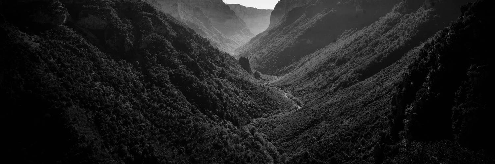 Charakter was habe ich gelernt? dass ich charakteristische objektive mag. dass meine suche von einer suche nach idealen
brennweiten auch zu einer nach konkreten objektiven wurde – welche haben
charakter, und welche dieser charakteristiken würde ich gerne in der eigenen
fotografie erkunden? das tut zwei ganz unterschiedliche richtungen auf, und
zwei unterschiedliche ansätze für die umsetzung (vom organisatorischen des
ganzen unterwegs mal ganz abgesehen) dass ich das spiel aus schärfe und unschärfe mag,
nicht aber objektive, die nur grade von unschärfe produzieren, ohne echte
schärfe. beide versionen des voigtländer 35/1.2 etwa habe ich deshalb wieder
verkauft. ebensowenig mag ich nur schärfe, das ist a)
langweilig und b) oft mit hässlichen artefakten verbunden, seien es farbsäume
(„ca“, canon eos) oder hässlich kochlinsenförmiges bokeh (zeiss, moderne
leicas). ich mag lichtstarke objektive, der freistellung
wegen, doch verabscheue ich freistellung mit tricks wie tiltshift oder gar
digitaler unschärfe. warum? weil sie etwas künstliches haben, eine weitere
dimension, die dem foto aufgenötigt wird. das, könnte man sagen, wird
selektive schärfentiefe doch auch? ja, doch anders. die entscheidung für eine
blende ist in jedem fall zu treffen. eine besonders große zu wählen, ist da
nur dehnung des rahmens. doch viel relevanter, aus kreativer sicht
betrachtet: tiltshift, eine schräglage der schärfenebene, oder digitale
unschärfe, eine digitale filterebene, fügen dem bild etwas hinzu, wo,
gefühlt, selektive schärfe durch große blende, etwas fortnimmt, und so habe
ich meine fotografie unbewusst immer gesehen: fortnehmen, was nicht hingehört
– ganz im unterschied etwa zu leuten, die vor weißer wand bildelemente
zusammensetzen, also elemente in eine leere einbringen zugleich verführt freistellung, wenn verfügbar in
form eines lichtstarken objektivs, zum komponieren eben auf freistellung hin
statt zum umsichtigen komponieren vom vorder- bis zum hintergrund. dessen bin
ich mir bewusst. ich schätze umsichtige kompositionen. die option, den
hintergrund zu verflüssigen, fügt dem kreativen repertoire etwas hinzu – das
muss nicht bei jedem bild angewandt werden meine prioritätenfolge für objektive: schärfe
-> freistellung -> charakter (freistellung ohne echten schärfenpunkt
auf dem hauptmotiv ist soße. charakter ohne schärfe ist soße mit schlieren.
charakter ohne freistellung ist soße mit klümpchen) ebenso charakteristisch: perspektive. 1o mm ist
eine andere perspektive als 12 mm. 18 oder 21 mm ist nochmal ganz anders.
dazwischen, irgendwo zwischen 15 und 18 mm, gibt es meines ermessens nichts
relevantes. und in der praxis mit dem 12 mm hatte ich oft verlangen nach mehr
weitwinkel als 12 mm, aber nie bewusst nach einer zwischenstufe zwischen 21
und 12 mm. auch viele weitere brennweitenabstufungen sind
eben nicht charakteristisch. alle folgenden zahlen beziehen sich aufs
vollformat: 28 ist wie 35 mm, nur mit mehr bildwinkel. der erzählt aber
nichts, fügt inhaltlich nichts hinzu. es macht das bild darüber nur weiter –
und oft leider verlorener, die komposition lapsiger oder banaler. 24 mm habe
ich als ähnlich empfunden. 21 mm dagegen ist ein durchbruch: eine andere
perspektivwirkung. 18 mm noch mehr, das ist mein sweet spot – aber wiederum
gibt es zwischen 18 und 21 mm kaum einen unterschied. wiederholter eindruck beim betrachten von bildern
anderer: 14 mm macht das gleiche mit 15/16 mm: etwas mehr bildwinkel, doch
kein erzählerischer mehrwert. macht 1o mm das gleiche mit 12 mm, oder können,
in beiden fällen, die leute nur nicht komponieren – haben sie ein
statussymbol gekauft, ein teures exotisches objektiv, das sie aber nicht
einzusetzen verstehen? umgekehrt: 5o mm ist mir am vollformat zu eng,
135 auch. 35 und 9o mm sind die antworten für mich: 35 mm als antwort auf die
enge von 5o mm, und 9o mm als antwort auf die enge von 135 mm. bei 5o mm
kommt hinzu: die „enge“ ist kompositorisch oft gar nicht verkehrt, das
ergebnis aber statisch, langweilig: ein objekt wird aus seinem kontext
gerissen und herausgestellt. da steht es dann. statt einer geschichte
entsteht ein statement. 35 mm bewahrt den kontext, gibt dem objekt einen
szenischen rahmen und damit dem bild nicht nur einen hauptakteur, sondern
eine geschichte, was der akteur macht. mit 28 mm wiederum geht der akteur in
der menge verloren… wie ist dann 9o mm? wie kann es sein, dass
weniger bildwinkel nicht erst recht rausstellt, abtötet? indem man anders
komponiert damit. wer portraits mit dem 9o mm macht, ja, der stellt raus,
tötet den kontext, zumal die entstehende schärfenuntiefe ihn erst recht
wegnimmt. all das gilt für 135 noch viel mehr. wer das 9oer dagegen zum
erzählen nutzt, erzeugt andere bilder. was zur frage führt: kann man nicht
jede brennweite zum erzählen nutzen, versus zum rausstellen?! und was ist der
unterschied? die entfernung beim aufnehmen, doch die ist nur die folge.
ausgangspunkt ist die intention, und dahinter die eigene sicht. ist die „ah,
zwei menschen!“ oder „ah, zwei menschen gehen aufeinander zu!“ – ganz andere
sicht. oder „ah, ein berg“ versus „ah, ein berg erhebt sich hinter der
stadt“. „ah, eine blüte“ versus „ah, eine blüte kriecht als einzige durch den
betonierten vorplatz“. und so weiter. ja, man kann in jede brennweite hineinwachsen,
das heißt intuieren schon vorm griff zur kamera, wie sie die welt sehen,
welchen ausschnitt aus ihr sie liefern wird. das geht erstaunlich schnell.
doch ob man mit dem dann glücklich wird, ist etwas ganz anderes. ganz so, wie
man eine person nach einer weile einschätzen kann, wie sie reagieren wird auf
etwas. ob man diese reaktion wünschbar findet, anregend oder gar sexy, ist
etwas völlig anderes… ich erkenne, dass es keinen relevanten
unterschied zwischen 8o, 85 und 9o gibt. ich erkenne darüber auch, dass es
keinen sinn in 7o oder 75 mm gibt – weder als einzelne brennweite (leica, und
dort nur aus der not geboren, weil 9o physisch am messsucher nicht lichtstark
zu realisieren war), noch als bonus am weitwinkligen ende eines 8o-2oo-zooms.
wenn dies mit 8o zu eng ist, hilft aufziehen auf 7o mm nicht ab; es braucht
signifikant weniger brennweite: ein 5oer, oder ein 35er. gibt es firmen, deren linsen wieder und wieder
enttäuschen? canon, hersteller des kreuzmiserablen 16-35, und des recht
miesen 24-7o/2.8, fallen mir ein. dann aber gibt es canons älteres fd-system,
und jedes objektiv daraus, das ich hatte, hat mich begeistert: das 85/1.2,
das besser als jenes von zeiss ist. das 3oo/2.8, das besser als jenes von
leica ist. das 8o-2oo/4, das als schärfstes objektiv dieser brennweite gilt,
und das 7o-21o/4, das in meinem eigenen und jedem anderen test, den ich sah,
gleichauf war (mal das eine, mal das andere besser), aber noch mehr brennweite
abdeckt, leichter ist, und unter 1o € kostet, wo das 8o-2oo fürs dreißigfache
geht. und dann gibt’s voigtländer, die heute machen,
was sigma vor zehn machte: tolle technische daten, und dann miserable,
kreuzenttäuschende umsetzung. das 35/1.2 I war so – grandiose idee, und dann
so grottenschlecht und so weich, dass selbst fotos auf billigstem negatvfilm
nicht scharf aussahen, und auch messsucher-digitalfotos mit optimiertem chip
nicht. version II war keinerlei verbesserung. der service, dem ich es schickte
zur justage, in überzeugung, derlei miserabilität könne nur durch dejustage
erklärbar sein, nahm mir über 25o euro ab - und tat nichts. nichts was die
abbildung verbessert hätte. dann gabs das 25/4 (oder wars gar ein 21/4?), an
dem mich auch nichts bewegte. langweilig. plump. doof. und dabei weder billig
noch kompakt. dann gabs das 15/4.5, und dann das 12/5.6, die immerhin die
größten weitwinkel sind, das heißt alternativlos, aber optisch
kreuzenttäuschend: weich, die ränder mies, keinerlei echte schärfe. auch hier
brachte der service nichts als einer horrenden rechnung. selbst auf film
sieht man gravierendste unterschiede zu etwas passablem (frappant ein test
gegen das Hasselblad XPan 3o/5.6, ein fast ebenso weites weitwinkel). und
jetzt wieder: die idee für ein schnelles, leichtes 75/1.5, 21/1.4 und ein
noch schnelleres 4o/1.2 klingt fantastisch. die betrachteten testbilder damit
aber wirken langweilig, selbst 1ox18 cm groß am monitor. und die überzeugung
besteht, dass, wenn ich die dinger kaufte, es dieselbe enttäuschung würde. Abseits von Nerderei, was heißt Charakter?! außer in direkten akademischen vergleichen ist
der abbildungscharakter verschiedener objektive einer klasse relativ ähnlich.
trivial: alle 5oer sehen die welt relativ gleich. feine unterschiede fallen
dem geschulten auge oder im direktvergleich auf. sie können im extrem auch
mittelbar auf den laien wirken, etwa durch besonders verträumtes bokeh oder
besonders hohe plastizität. auch wenn der laie das nicht verbalisieren
könnte, könnte er doch ein "gewisses etwas", einen charme in einem
bild wahrnehmen, welchen ein anderes bild mit einem anderen objektiv ihm so
nicht zeigt. meine erfahrung ist aber, dass die unterschiede
im letztlichen endergebnis, dem praktischen bild, deutlich geringer sind als
man sich das als fotograf, der nicht mit laienhafter leichtigkeit drangeht,
sondern von propaganda um schärfe, MTF-kurven, bokeh und sonstwelchen
spitzfindigkeiten beeinflusst, erwarten würde. konkret ist die abstufung der unterschiede so: sensor-/filmformat
- brennweite - lichtstärke - ära - region - hersteller - serie - streuung. das bedeutet: ein gleiches sensorformat
angenommen, sehen alle objektive mit brennweite 5o mm in etwa den gleichen
bildwinkel. auch wenn das als 5oer vermarkete objektiv einer marke in
wahrheit 46 mm brennweite hat und das der andern in wahrheit ein 52 – der
unterschied ist wurscht. selbst ein kommunizierter unterschied, etwa zwischen
45, 5o, 55 und 58, wie bis vor kurzem gängig, ist irrelevant. wer seiner objektivsammlung daher etwas wirklich
anders abbildendes hinzufügen möchte, der kaufe kein zweites 5oer, egal wie
charakteristisch es abzubilden suggeriert, sondern ein 35er, 28er oder 85er. die nächste abstufung weniger unterschied als
verschiedene brennweiten machen unterschiedliche lichtstärken. wer also
seinem 5o mm mit lichtstärke f/2 unbedingt ein weiteres 5oer statt eines 35
oder 85 hinzufügen möchte, der kaufe kein weiteres f/2, egal egal wie
charakteristisch es abzubilden suggeriert, sondern ein f/0.95, f/1 oder
f/1.2. die nächste abstufung noch weniger unterschieds
machen unterschiedliche äras, aus denen objektive stammen. wer also ein altes
5o mm von 1965 besitzt, der kaufe, wenn er andere abbildungscharakteristiken
sucht, kein weiteres 5oer aus den 196oern, sondern ein mordernes. das gleiche spiel lässt sich mit den weiteren
parametern fortsetzen, mit immer geringeren gewinnen an unterschiedlichkeit:
zwei objektive gleicher brennweite, lichtstärke und ära, aber aus
unterschiedlichen regionen, werden unterschiedlich abbilden, aber die
unterschiede sind noch marginaler und über die zeit weiter geschrumpft: in
den 196oern brachte der ostblock kaum brauchbares hervor; die japaner, welche
mit amerikanischer segnung die deutschen patente aushebelten, waren dagegen
allmählich auf deutschem level. die deutschen waren allen anderen trotzdem
noch voraus. heute, d.h. bei zwei objektiven von 2o2o, sieht man zwar einen
unterschied zwischen bspw. zeiss/leica und irgendeiner chinesischen firma,
von der noch niemand gehört hat, aber der unterschied ist geringer als bei
zwei objektiven von 196o, wo eins von leica und das andere aus der udssr von
fed kommt. ganz weit unten stehen dann konkrete
herstellerunterschiede, d.h. eben etwa zwischen zeiss und leica, oder
zwischen olympus und canon. und noch weiter unten stehen serienunterschiede,
etwa der unterschied aus dem canon 5o/1.4 der FD-serie vs. der EF-serie. in
einigen fällen gibt es gar keine! das canon EF 35-105 etwa ist das gleiche
wie das frühere FD, dito das 2oo/1.8; fürs 5o/1.4 wird ähnliches gemunkelt. und an allerletzter stelle steht der unterschied
der serienstreuung, d.h. wie gut zwei exemplare eines sonst identischen
objektivs sind. letzteres ist nur ermittelbar, wenn man sich tatsächlich zwei
exemplare zum vergleich zulegt, was manche käufer tatsächlich tun, und dann
das weniger gute zurückschicken. auch wenn auf beiden 3oo/2.8 Canon EF L IS
USM II draufsteht, mag es minimalste unterschiede in der schärfenleistung
oder zentrierung geben. bei manchen herstellern fallen diese unterschiede
gravierender aus als bei andern (sigma und voigtländer etwa der nicht allzu
vergangenen jahre waren legendär schlimm). aber sie verändern nicht den
abbildungscharakter, sondern sind nur, und damit sind wir zurück am anfang,
akademisch interessant, im direktvergleich: erreicht das vorliegende exemplar
jene schärfenleistung, welche der hersteller via testbildern und mtf-kurven
verspricht? aus vorgenannten gründen ist eine entscheidung
zwischen objektiven vor allem aus ergonomischer sicht hilfreich: welcher
hersteller bieten die für mich größte ergonomie? dazu gehören nicht nur
schiebe- vs. drehzooms oder ob der unendlichanschlag des fokusrads links oder
rechts ist. auch ist eine überlegung, wie komplett ein objektivsystem ist,
zumindest für meine anforderungen - canon FD hatte beispielsweise keinerlei
schnelle 35er, 28er oder 1ooer. 1oo mm ist nicht meine brennweite, kann mir
also wurscht sein, zumal es das tolle 85/1.2 gibt. aber ein schnelles
weitwinkel hätte ich doch gerne, und das einzig angebotene, das 24/1.4, ist
wiederum auch nicht meine brennweite. da ich aber bereits diverse
fd-objektive, zubehörteile und adapter besitze, bleibe ich bei dem system,
statt mich auf weitere einzustellen. auch das ist ergonomie. 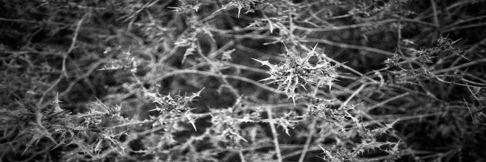 Nützlichkeit gelernt: die diskrepanz bei einem für toll befundenen
objektiv aus objekt und nützlichkeit. es gibt großartige 3oo mm-objektive,
sowohl des bildlooks wie auch ihres handlings wegen. doch die brennweite ist
(für mich) eigentlich irrelevant: wo es um teletypische perspektivkompression
geht, ist der bildwinkel des 3oo mm zu eng. die kompression ist gegeben, sie
lässt aber statt einer komprimierten übersicht („altstadtlabyrinth“) nur noch
die herausstellung von drei häusern übrig: ganz andere aussage: statt „ah,
eine enge altstadt“ wird das bild zu „hä, drei alte wände – nix besonderes?!“
dito für landschaftszüge (hügelketten) mit luftperspektive. für tiere, die
andere anwendung langer teles, ist der bildwinkel des 3oo mm oft noch zu
weit. die lösung ist im ersten fall ein 2oo mm (noch weniger brennweite
erzeugt keine kompression mehr), in letzterem ein 4oo mm oder noch länger. in
der sportfotografie mag 3oo mm berechtigung haben, keine ahnung, denn die
interessiert mich nicht. dieselbe diskrepanz aus tollem objekt versus
nützlichem werkzeug ergibt sich für lichtstärke, vor allem im telebereich.
etwas reizt mich an solchen dingen wie einem 2oo/1.8 oder seiner 1oo
€-variante von lomo, einem 18o/2. doch ich habe keinerlei verwendung dafür.
für landschaften, wo ich 2oo mm als brennweite gerne einsetze, ist die
lichtstärke unnötig, gar unnutzbar. für tiere ist die brennweite viel zu
kurz, außer im zoo, und da gehe ich nicht hin. diese objektivklasse, ähnlich
wie 3oo/2.8, ist für sportfotografen, und sportfotografie mache ich nicht. die diskrepanz gilt auch für die vielzahl an
alternativen. zu jeder brennweite finde ich eine hand voll alternativer
konkreter objektive, die jedes aus einem andern grund reizvoll wären. doch
selbst wenn geld kein faktor wäre, wäre es völlig irrig, alle zu erstehen.
welches ich am ende in der praxis vorzöge, ist bereits jetzt hier, auf dem
papier, ersichtlich, nach obigen maßstäben. die anderen wären sammlerstücke,
und ich bin kein sammler! ich gehe noch nicht mal raus im bestreben, motive für
ein objektiv zu finden (oder, weniger nerdig formuliert, motive in einem
bestimmten bereich, etwa auf makro-fototour gehend). erkenntnis: ich will als
fotograf vielseitige objektive, die sich unterwegs so einsetzen lassen, dass
sie alles abdecken, was mir unerwartet begegnen könnte. das tele soll in der
ferne scharf sein für landschaften, bei portraits genug freistellung und
schönes bokeh liefern, und in den makrobereich hinabreichen, falls mir
wandernd ein lurch begegnet; das weitwinkel soll die option von freistellung
bieten. ein-trick-ponys sind als objekte reizvoll,
sprechen etwas in mir an. was? die lust am explorieren dieses einen tricks in
der kreativen fotografie. als werkzeuge sind sie darüber aber arg beschränkt,
und darüber enttäuschen sie. ich erinnere ein swirliges 58 mm-objektiv, mit
dem ich durch den brandenburger herbst zog auf der suche nach motiven. die
fanden sich nicht recht, und die magere schärfe am
schärfsten punkt machte auch die freude am swirl zunichte. danach mochte ich
es nicht mal mehr für portraitprojekte einsetzen – warum? das wäre doch der
ideale rahmen gewesen. offenbar will ich ein objektiv (oder eine ganze
technik, lochkamerafotografie etwa) also intim kennen lernen und dann überall
einsetzen, oder ich will sehen, wie es unterschiedliche bereiche sieht.
vielleicht gibt es aber auch einen x-faktor, ein gewisses etwas, das mich
reinziehen muss, und dann nutze ich das objektiv für alle bereiche, ob
angemessen oder nicht: etwa das 35/2.7 pancake für landschaftsaufnahmen, für die
es wirklich nicht ideal ist. das 58er wiederum hatte diesen x-faktor
vielleicht einfach nicht, hat mich einfach nicht reingezogen, unabhängig von
vorhergehenden erwartungen – also nutzte ich es überhaupt nicht. ich erkenne auch, eben, doch das wusste ich
schon, dass ich im zweifel oft lieber ein tolles objekt mitnehme als das
ideale werkzeug. wenn das f/1.2 geeigneter wäre, doch das f/2 besser in der
hand liegt oder auf reisen kleiner ist, so nehme ich das f/2. über all dem gibt es eine handvoll objektive, die
wirklich wünschbar sind, da universell überzeugend. dann gibt es eine
handvoll, die interessant zu testen sind, doch eigentlich ist mir klar, wie
das ergebnis solcher tests ausfallen wird: es wird eine „lebenserfahrung“
werden, ein addendum zur liste der genutzten objektive, doch es wird kaum zum
hinzufügen eines der testkandidaten zum eigenen objektivbeutel führen, oder
gar zum tausch des kandidaten mit einem bewohner des beutels.
überraschungsfunde sind unwahrscheinlich – allein schon, weil ich weiß, was
ich suche bzw. was ich, hinter technischen daten oder werbeversprechen,
finden werde. mir ist, mal wieder, klar geworden, dass ich als
fotograf einfachheit und kompaktheit schätze. zeichnet sich darüber eine spaltung ab, wonach
der künstler, der fotograf in mir das puristischste werkzeug verlangt, ein
anderer teil in mir aber eben reiz an spielereien und objekten, auch
praktisch völlig unnützen, findet?! ich habe ja keine freude, wenn die dinger
nur im regal stehen. im gegenteil! was wäre also der reiz an einem 3oo/2.8
oder 2oo/1.8 oder fünf unterschiedlichen, charakteristisch zeichnenden 5oern,
deren brennweite ich aber überhaupt nicht nutze? hätte der teil, der sie
will, gerne, dass ich rausgehe und motive für sie suche?! das wäre ja sogar
möglich, je nach umgebung, doch es wären keine guten fotos. mal abgesehen
davon, dass die geräte auf reise zusätzlich mitgenommen werden müssten, und
dann stehen sie rum und können geklaut werden. oder, auf wanderung, ich muss
sie zusätzlich tragen. alles erlebt, alles mist! steckt hinter diesen überlegungen ein verlangen,
mehr zu fotografieren, d.h. mehr motive zu sehen?! dann würde ich doch nicht
auf die suche nach geräten gehen, nach beispielbildern. zugleich, ja, hätte
ich gerne gelegenheit, diese verschiedenen objekte zu testen – in
situationen, die sich relevant anfühlen. doch davon gibt’s immer weniger:
weil sein wichtiger ist als fotografieren. und weil vieles sich fotografisch
ausexploriert anfühlt: alles erkundet. doch selbst wenn es anders wäre, fände
sich auf objektebene sehr schnell wieder ein favorit, oder ein nachteil, der
ein „charakteristisches“ objektiv, das zu ertesten ein verlangen war,
disqualifiziert: die einfachheit würde obsiegen. weder beschränkte
schärfenleistung, noch umständliches handling kämen gegen das verlangen nach
einfachheit an; in den meisten fällen noch nicht mal unpraktische größe. zwischen charakter und nützlichkeit beschreibt
einer, dass er bestimmte objektive kauft im wissen, sie nur zwei mal im jahr anzuwenden – wegen ihres charakters, den
er als gemäldehaft beschreibt: das 85/1.2, das alte canon 5o/.95, das
petzval, das noctilux. ich vollziehe den gedanken nach, doch er impliziert
wieder das suchen von motiven, oder das erschaffen von situationen/projekten.
das missfällt mir. und zufälle gibt es keine mehr, wie einst mit Eva, mit der
ich immer mal wieder fotografierte und also vorher wusste, dass ich mir
objektive oder techniken zurechtlegen könnte, die ich anwenden könnte. das
weitete ich auf andere arrangierte projekte aus – bis ich die lust an
arrangierten projekten verlor, und sie mir auch nicht mehr einfach so
zuflogen. wäre es möglich, dahingehend wieder mehr zu
machen? was würde ein arrangiertes projekt interessant machen?! eine
interessante person, das war schon immer der aufhänger. und eben, eine
interessante umgebung: örtlich, sowie technisch. ein netter ort allein,
konventionell fotografiert, ist dröge. dann genügen portraits vor weißer
wand, wie mit Lisa öfter gemacht: die person erkunden, nichts weiter. es geht ums „bereitsein“ – alle geräte zu haben,
die ich brauchen mag, um ohne kompromisse bilder zu machen. ich will keine
kompromisse in den bildern eingehen („ja, es ist verrauscht, weil ich auf iso
32oo gehen musste, weil ich nur f/8 habe“ „ja, es ist nicht recht scharf,
aber man erkennt ja, was das bild zeigt“). die nehmen die freude. das
ausbreiten des charakters eines objektivs ist dann noch etwas anderes; eine
parallele schiene. ist das snobismus: wenn ich auf der suche nach
einem lichtstarken 35er das leica summilux kaufte, würde ich mich nicht
weiter umsehen, außer es wäre konkret enttäuschend. kaufte ich das zeiss,
bliebe dagegen die neugier. woran liegt das? dem marketing leicas verfallen,
das ein mysterium erschafft – wo zeiss ein (allzu kaltes) werkzeug ist? welche lichtstärke ist denn mein minimum je
brennweite? bei 35mm ists f/2.8, doch lieber noch f/2. bei allem darunter,
d.h. in den weitwinkel vorstoßend, ists f/1.4, wenn freistellung und also
kreativer einsatz von schärfe überhaupt ein faktor sein soll. wenn nicht, ist
es völlig ausreichend, sich auf f/5.6 oder f/8 als größte blende zu
beschränken und dafür das kompakteste oder schärfste objektiv zu wählen.
f/2.8 bringt nämlich nur mehr licht, nicht mehr freistellung, und im
weitwinkel braucht im digitalen alter keiner mehr licht. umgekehrt ist
seitens freistellung ab 85 mm eigentlich f/2 bis f/2.8 völlig ausreichend,
denn ein formatfüllendes kopfbrustportrait braucht sogar noch kleinere
blenden, um das ganze gesicht scharf abzubilden. ja, für aufnahmen in mehr
entfernung ist f/1.2 nett, das stimmt, das hat etwas großformatlook. 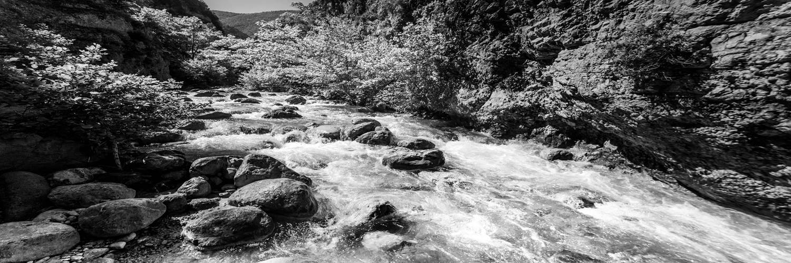 Autofokus seit fast 2o jahren verwende ich keine
autofokusobjektive mehr. das fing aus notwendigkeit an, ein ultratele für ein
naturfotobuch anzuschaffen, aber als student bei weitem nicht das budget für
eine moderne version zu haben. es blieb nur der gebrauchtmarkt, und der hatte
zu jener zeit nicht viel zu bieten. ein 4oo 2.8 war alles, was lang, scharf
und bezahlbar genug war. ein altes manuelles nikon ais. ich hätte lieber ein
f/4 oder noch lieber ein 5oo/4 gehabt, zumal das nikon offen nicht besonders
gut war. aber das gab es nicht, nicht in meinem budget. also musste ich
lernen, manuell zu fokussieren, schneller als ein tier sich bewegt, und mit
der schärfentiefe eines 5o/o.o42 (!!!) und ich lernte. und hatte freude dran. im extrem
wird die ständige kurbelei zwar irgendwann nervig. aber gegenüber einem
autofokus, der alles von selbst macht, und einen so überhaupt nicht
involviert, und zugleich (mindestens damals, um 2oo5) nie 1oo-%ig trifft,
sodass jedes bild matschig aussieht, ist manuelles fokussieren so viel
involvierter, was sich auch auf andere aspekte des fotografierens überträgt,
indem man nicht nur bewusster fokussiert, sondern auch bewusster komponiert,
mehr nachdenkt über das bild: weil es nicht die option gibt, die kamera
"mal machen" zu lassen. auch in kompositionen, wo es mehrere
potenzielle schärfenpunkte gibt, baumstämme im wald etwa, muss ich noch immer
bewusst entscheiden, auf welchen ich sie lege. anders als die kamera in den
wald zu strecken und der automatik zu vertrauen. die andere notwendigkeit zum manuellen
fokussieren waren aufnahmen bei wenig licht: tiere im wald; theaterfotos;
nachtszenen. es mag heute anders aussehen, aber 2oo5 war den automatiken nicht
zu vertrauen. im extrem hätten sie gerödert und gepumpt, ohne sich je
festzulegen, bis der akku leer wäre. ich hätte mehrfach beinahe die ganze
teure ausstattung gegen die nächste wand geschlagen aus frust über verpasste
bilder. manuell fokussierend kommt es auch mal vor, den moment zu verpassen,
weil die schärfe noch nicht sitzt. doch im nächsten moment sitzt sie. die
automatik dagegen rödert eine minute später immer noch. hinzu kam, dass ich just für aufnahmen bei wenig
licht besonders schnelle objektive wollte: 35/1.4, 50/1.2, 135/1.8. die waren
in der damaligen neuversion mit autofokus ebenso unbezahlbar. also blieben,
erneut, nur alte manuelle. rückblickend ist es auch eine große freude, nicht
nur finanziell, sondern auch anwendungsseitig, die immer gleiche, sorgsam
zusammengetragene objektivauswahl an jede beliebige kamera adaptieren zu
können. wäre ich 2o16 nicht beraubt worden, so hätte ich heute noch immer die
gleichen objektive in meiner tasche wie schon fünfzehn jahre zuvor (mit
einigen zu- und abgängen). kameras kamen und gingen seither, und auch
kamerasysteme. hätte ich jeweils alle objektive neu gekauft, so wäre das
exorbitanter wertverlust gewesen, und zugleich extreme einschränkung. die letzte freude an manuellen objektiven ist
nämlich, dass sich die auswahl, aus der man schöpfen kann, vervielfacht.
selbst an die 2oo5 alternativlosen slrs passen nikons, m42 und alte
projektionsobjektive; bei spiegellosen kommt eine immense breite von
messsucher- und industrieoptiken dazu sowie jede erdenkliche spielerei. wer
dagegen sonys werbeversprechen vertraute, die objektivserie für ihr damals
neues E-system auszubauen, der musste sehr, sehr lange geduld haben. wer
zeiss, einem viel etablierteren hersteller, dasselbe versprechen vertraute
als es um das contax-g-messsuchersystem ging, der wartet noch heute: dieses
kurz vor dem tod der filmfotografie ganz neu eingeführte system umfasst bis
heute nur sieben objektive: 21/2.8 (zu langsam und keine freistellung),
28/2.8 (nicht meine brennweite auf kleinbild), 35/2 (nett, aber sowohl für
licht wie auch freistellung hätte ich gerne die option eines 1.4), 45/2 (auch
nicht meine brennweite auf kleinbild), 90/2.8 (kein schönes bokeh und viel zu
wenig freistelleffekt), sowie ein unbezahlbares 16/8 und ein sinnloses 35-70/3.5-5.6,
das viel zu groß, schwer und lichtschwach ist. und dann gibt’s noch drei argumente: gewicht,
kompaktheit, lichtstärke. bis heute gibt es nur ein einziges
autofokusobjektiv mit f/1, das canon ef 5o L nämlich, und es ist seit zwanzig
jahren nur noch antiquarisch zu kriegen. ich bedaure ein wenig, es mir damals
nicht geleistet zu haben, sondern den kompromiss eines f/1.2 eingegangen zu
sein, das alt und manuell war. aber aus heutiger sicht das ist L völlig
irrelevantes sammlerstück: nicht scharf, hässliches bokeh, riesig und schwer,
absurd teuer. wer einen bruchteil für ein neues 5o/o.95 mit manueller
fokussierung ausgibt, kriegt etwas viel tolleres. zynismus am rand: der AF
des L war quälend langsam. bei anderen modellen sieht es etwas anders aus;
das canon 85/1.2 gibt’s mit AF, ebenso mittlerweile diverse 135/1.8. aber der
gewichtsunterschied ist gravierend. während die schärfenleistung von canon's
85/1.2 im manuell zu fokussierenden FD-anschluss gegenüber dem
autofokussierenden EF-modell identisch ist, unterscheidet sich das gewicht um
über 2oo g oder 25 %. das spürt man. und erneut ist der autofokus nicht
besonders schnell. andere modelle lassen sich nicht direkt
vergleichen - so gibt es ein 28/1.4 mit AF von sigma, das 96o g wiegt,
während ein 28/1.4 von leica nur 43o g oder weniger als die hälfte wiegt.
natürlich sind das völlig andere systeme und andere optiken im innern. aber
das bildergebnis, und nur auf das kommt es an, ist identisch, wenn ein
schnelles, scharfes weitwinkel gefragt ist. wer also aus dem blickwinkel der
praxis auf die entscheidung kuckt, der muss sich streitbar fragen, ob ihm der
AF wirklich mehr freiheit auftut als bei gleichem gewicht ein oder gar zwei
weitere objektive mittragen zu können! und zu allerletzt kucken wir noch aufs andere
extrem: die kompaktesten objektive. ich habe eine leidenschaft sowohl für die
schnellsten, wie auch für die kleinsten objektive. alles dazwischen finde ich
irrelevant, denn wozu? wenn ich freistellung suche, so will ich die freiheit
haben, die maximal erzielbare freistellung nutzen zu können. ein 85/1.8 ist
daher irrelevant, wenn es ein 85/1.2 gibt - das MUSS ich nicht immer bei
f/1.2 nutzen, KANN aber, wenn ich will. und umgekehrt, wenn mir freistellung
egal ist, dann will ich das kompakteste und leichteste objektiv. da ist auch
das f/1.8 noch viel zu schwer - wozu sollte ich bei wanderungen große,
schwere portraitobjektive mittragen? also will ich das leichteste 28er - egal
ob es ein f/2 oder f/4 ist, denn es wird bei f/8 genutzt werden für landschaftsaufnahmen.
und dann habe ich unter manuell fokussierten modellen gleich mehrere zur
auswahl, die diese kriterien erfüllen und dabei nicht dicker als ein
bajonettdeckel sind. bei längeren brennweiten geht das konstruktiv natürlich
nicht mehr; ein 9oer wird immer länger sein als ein 28er. aber das prinzip
bleibt das gleiche: sowohl weniger gewicht gibt es, wie auch gar versenkbare,
in sich zusammenfaltbare lösungen! zusammenfassend ist es für mich keine
tiefgreifende überzeugungsfrage ob AF oder nicht, und kein maßstab, um mich
als profi zu profilieren, auch wenn ich oft beobachte, dass sich genau hier
die künstler von den knipsern trennen, indem die knipser kaufen, was halt
beim mediamarkt rumsteht, während die künstler wissen, was sie wollen und
welches kamerasystem und welches objektiv ihnen das gibt. für mich ist autofokus einfach irrelevant, genau
wie die menge an serienbildern pro sekunde oder die rauscharmut bei einer
million iso. es gibt tausend relevantere kriterien für den kauf einer kamera,
und auch eines objektivs. sodass ich einfach keine notwendigkeit, kein
verlangen nach AF verspürte. Zooms ärgerlich, dass es keine „relevanten“ zooms gibt,
d.h. solche, die mindestens drei meiner brennweiten abdeckten, und in
freistellender lichtstärke. 1o – 21 – 35 – 85/9o - 2oo – 4oo im vollformat. es gibt kein 21-85. 24-1o5 oder gar 24-135 decken
nur 35 und 85 ab, plus oben beschriebenem „mehr“ an bildwinkel. ungeachtet dass die optischen leistungen mies
sind, und die geräte trotzdem riesig, und dabei trotzdem gravierend
lichtschwach und somit keine freistellung bieten, sind sie allein ob der
brennweiten nicht relevant. das einzige 8o-4oo mm, von nikon nämlich, das
also 85, 2oo und 4oo abdeckte, ist leider völlig irrelevant unscharf. es ist
ein pressegerät, keins für künstler. ja, dann gibt es noch 28-2oo/3oo mm und 35-35o mm
zooms, die also 35, 9o und 2oo abdecken, doch auch die sind alle sind
furchtbar unscharfe pressezooms, wo ein bild wichtiger ist als ein gutes
bild, und alle fangen erst bei f/3.5 oder noch weniger an, was bei 35 mm
keinerlei freistellung mehr ergibt. vom gewicht ganz abgesehen. für die einzige situation, wo ich mir ein zoom
als nützlich vorstellen konnte, nämlich dann, wenn das wechseln des objektivs
physisch unmöglich erscheint, kam ich zum schluss, eher ein hyperfokussiertes
35er bei f/8 einzusetzen als ein 24-1o5-zoom. ein 35er mit hoher
schärfenleistung ist cropbar und damit ähnlich flexibel, und dabei welten
kompakter als ein zoom. zugleich ist die einzige konkrete situation, die mir
zu obigem szenario einfiel, ein kompaktflugzeug, wo mehr als 9o mm ohnehin
nicht recht nutzbar sind, außer man entfernt die fenster (der übelkeit wegen,
die das schaukeln des sucherbilds längerer brennweiten erzeugt). 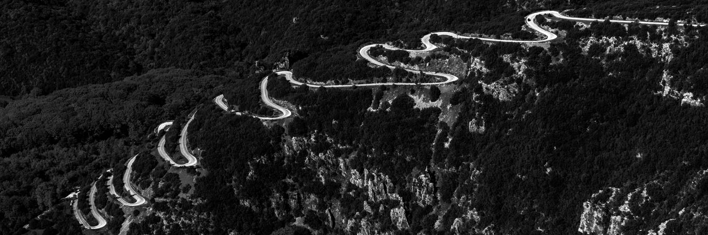 wähle zooms nicht nach brennweitenwerten aus,
sondern nach einsätzen. wenn du von einem 24-1o5 mm ausgehst, ist die
logische erweiterung nicht ein 1oo-4oo mm, nur weil es an die tele-brennweite
des 24-1o5 anschließt. vielleicht nutzt du das 24-1o5 mm, um menschen zu
fotografieren, während du das tele ausschließlich bei tieren rausnimmst? dann
ist die frage fürs tier-zoom, ob nicht eine option, die mehr weitwinkel, d.h.
eine kürzere anfangsbrennweite ohne objektivwechsel ermöglicht, wünschbarer
ist? das wäre etwa ein 8o-4oo mm. dahinter steht auch: wo sind objektivwechsel
sinnvoll, d.h. bei welchen brennweiten? bei 7o mm statt 1oo mm zu wechseln
erscheint mir sinnvoller. 7o ist eine vielseitigere brennweite, finde ich.
und im zweifelsfall ist croppen einfacher als drei schritte zurück machen,
was nicht immer möglich ist. am andern ende der skala kommt hinzu, dass eine
beschränkung des brennweitenbereichs auf 24-7o mm optionen mit f/2.8 auftut,
was nicht viel, aber doch ein bisschen schneller ist und darüber mehr
gestaltungsfreiheit auftut als f/4. 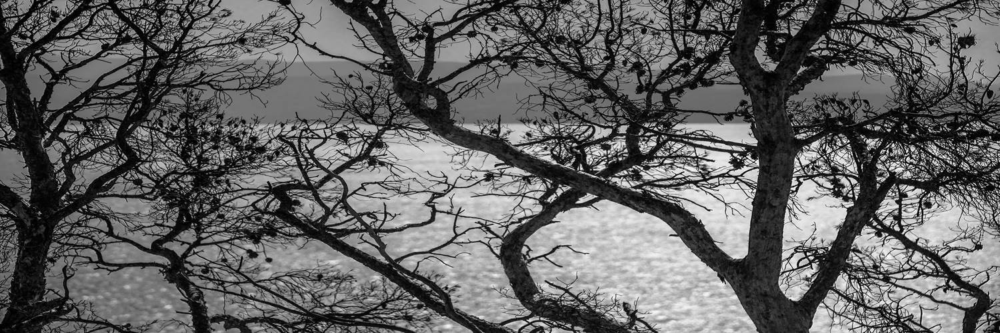 welchen nutzen haben zooms mit grademal
zoomfaktor 2x? gegenüber festbrennweiten nur einen beschränkten, zumal sie
praktisch ausnahmslos deutlich größer, schwerer und doch lichtschwächer sind,
also auch die gestaltung deutlich einschränken. sie mögen aber kompaktheit
und schnelligkeit ergeben, wenn das mittragen und wechseln von zwei
objektiven, etwa 35 und 85 mm, entfällt, und man stattdessen von 35 auf 7o mm
zoomen kann. gewiss, statt 85/1.8 hat man dann nur 7o/4. wer
damit leben kann, dem tut sich ein weiterer vorteil auf: als teil eines
systems. da braucht es nämlich keine lückenlose brennweitenserie. an ein
35-7o mm schließt sich daher vielleicht nicht sinnvoll ein 7o-2oo mm, sondern
vielleicht ein 1oo-3oo mm oder -4oo mm an. und auch am weiten ende braucht es
kein 16-35 mm, die lückenlos an 35 mm anschlössen. eine deutlich kompaktere
festbrennweite, 21 mm etwa, genügt oft. wer sich indes nicht an großen zooms
stört, der kann sich ein 1o-2o mm, 14-24 mm oder ähnliches ansehen, das bei
gleichem gewicht wie ein 16-35 mm deutlich mehr weitwinkel auftut. 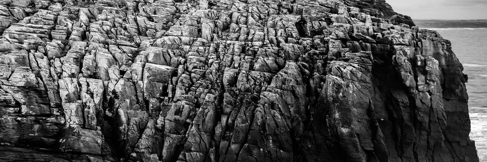 die größte einschränkung von zooms ist ihre
geringere, oftmals gravierend geringere lichtstärke und die damit verbundene,
mithin drastische, einschränkung der gestaltungsfreiheit, welche sich sowohl
aus schnelleren verschlusszeiten wie auch selektiver unscharfzeichnung
ergeben. letzteres ist nicht nur ein modehype des neuen jahrtausends. das
trennen eines hauptmotivs von einem weniger relevanten hintergrund ist eine
gestalterische disziplin mit eigener berechtigung jenseits der mode. freilich
kann man es übertreiben hin zu unscharfschlachten,,
wo echte schärfe so rar ist wie bei supermarktchilis. doch zwischen inexistenz dieser freiheit und
ihrer übernutzung gibt es einen sehr breiten sweet spot. der unterschied, den
selbst ein moderates 5o/1.8 gegenüber einem kitzoom abgibt, das bei gleicher
brennweite oft nur f/4.5 offeriert, ist je nach situation gewaltig. doch verstehe dies bitte nicht im geist jenes
appells, den man mithin liest, zusätzlich zu den zooms noch ein schnelles
5oer zu kaufen. wer die welt durch zooms betrachtet, wird die festbrennweite
in der kameratasche verwaisen lassen. verstehe es als impuls, die welt einmal
anders zu betrachten zu lernen! und dem 5oer nicht einen sack kitzooms
hinzuzufügen, sondern eine erlauchte und überlegte festbrennweitige
erweiterung: eine in den tele- und eine in den weitwinkelbereich. die
typischen brennweiten neben dem 5o mm sind dann 28 mm und 85 bzw., je nach
hersteller, 9o mm. vielleicht merkst du auch, dass dir das
dazwischen viel mehr liegt: 35 mm. oder 135 statt 9o mm. das ist keine
endlose rumprobierei um der technik willen. es ist eine lernerfahrung, die
dich deiner fotografie näher bringen wird! 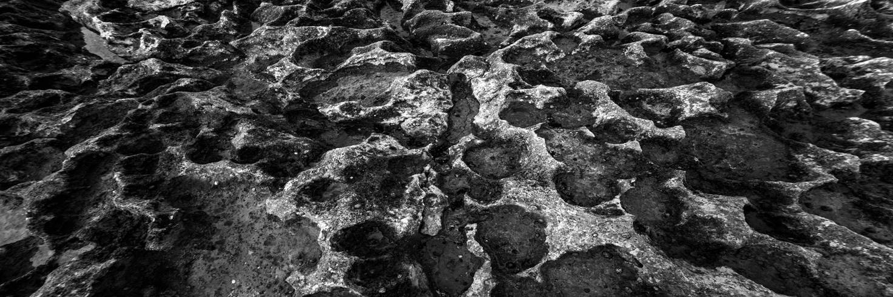 sinnvoller erscheinen mir zooms, die mindestens
drei brennweiten abdecken. typischerweise ist der zuwachs an gewicht und
grösse von einem 2x- zu einem 3x-zoom nicht so groß wie jener von einer
festbrennweite zu einem 2x-zoom; vor allem aber nimmt die lichtstärke kaum
mehr ab. wer also ohnehin bereit ist, große teile der
kreativen freiheit aufzugeben, die mit der lichtstärke einer festbrennweite
einhergehen, erhält mit einem 3x-zoom typischerweise den besten deal. auch,
was die abbildungsleistung anlangt. zooms mit noch größerem zoomfaktor leiden
hier; umso mehr, wenn sie entgegengesetzte brennweitenbereiche abdecken, d.h.
sowohl den weitwinkel- wie auch den telebereich. dem gleichen optischen
system zwei widersprüchliche aufgaben abverlangen, vergrößern (tele) und
komprimieren (weitwinkel), muss zu einbußen führen. beschränkt man sich auf
eine aufgabe, sind diese einbußen verschmerzbarer (8o- bzw.
1oo-4oo-mm-telezooms etwa; es gibt noch lange keine objektive mit
vergleichbarem zoomfaktor im weitwinkel, also etwa ein 1o-4o mm oder 12-5o
mm). und was heißt drei brennweiten? nicht 28, 35 und
5o mm, nur weil das bekannte nenngrößen sind. sondern drei distinkte
brennweitenbereiche. ich gehe dabei grob von einer verdopplung der brennweite
aus. wer ein 35er-objektiv hat, der wird sinnvoll kaum ein 28er zusätzlich
brauchen. selbst 24 mm fügen (und wie jede andere beobachtung ist auch diese
nicht frei von subjektivität) dem 35er nichts wirklich neues hinzu. du wirst
eine präferenz fürs eine oder andere entwickeln, deinem stil folgend, doch
kaum dauerhaft beide mitnehmen. der unterschied zwischen 35 mm und 21 mm dagegen
ist deutlich gravierender – auch wenn er in zahlen ganz und gar nicht so
wirkt: drei millimeter hin oder her vom 24er. das liegt indes daran, dass
brennweiten-millimeter, ähnlich etwa wie dezibel, nicht linear die
veränderungen der ihnen hinterliegenden bildwinkel wiedergeben. der sprung
von 21 mm zu 24 mm ist, obwohl in zahlen scheinbar vernachlässigbar, ein paar
welten gravierender als der sprung von etwa 2oo zu 21o mm, obwohl der, in
zahlen, drei mal so groß ist. diese erkenntnis macht auch das pauschalisieren
relevanter zoomfaktoren etwas schwammig. ein 1o-18-mm-zoom hat einen
zoomfaktor von weniger als 1:2. der unterschied in der bildwirkung vom langen
zum kurzen ende fällt aber gravierend aus. ein 3oo-8oo-mm-zoom hat einen
zoomfaktor von 1:2.7, doch der unterschied in der bildwirkung vom langen zum
kurzen ende fällt deutlich weniger gravierend aus. (der mathematisch kundige
wird zudem bemerkt haben, dass das eine objektiv zur erlangung dieses
unterschied acht millimeter brennweite überwindet, das andere fünfhundert!)
es gilt daher ein addendum zu obiger faustregel: der wünschbare zoomfaktor
nimmt mit der brennweite zu. ein zoom, das drei brennweitenbereiche umfasst,
wäre also etwa ein 21-35-85 oder ein 35-85-200, oder ein 50-100-200 mm. 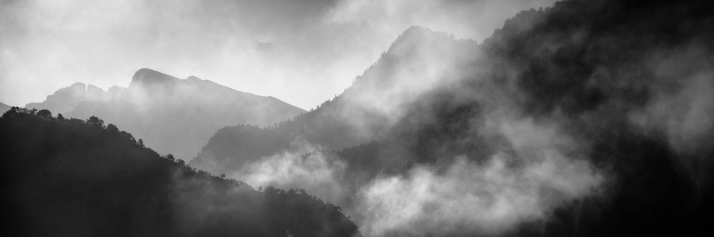 wer zooms nur zur reduktion der zahl
mitzuführender objektive kauft, kann sich die dopplungs-faustregel auch
insofern zunutze machen, als dass er nicht eine nahtlose brennweitenreihe
anzustreben braucht. einem 35-7o mm muss nicht ein 7o-2oo mm folgen. ein 1oo-3oo
mm ist genug, und tut – oft bei gleichem gewicht wie das 7o-2oo mm – mehr
tele auf. wenn es in kombination mit dem weitwinkelzoom eingesetzt werden
soll. statt den bereich 35 bis 3oo auf vier festbrennweiten zu verteilen,
lässt er sich so auf zwei zooms verteilen, die zugleich doch eine deutlich
bessere bildqualität abgeben werden als ein einzelnes 35- oder
28-3oo-mm-superzoom. dieser ansatz ist hilfreich, wenn ein einzelnes
zoom den angestrebten brennweitenbereich nicht oder nicht in überzeugender qualität
abdecken kann. geht es ums maßschneidern verschiedener zooms für verschiedene
ansätze, ist aber obiger ansatz, den jeweiligen brennweitenumfang dem
jeweiligen einsatz anzumessen, praktischer, d.h. ein zoom für jede
anforderung zu wählen und seinen brennweitenbereich auf diese anforderung
maßzuschneidern. dann ist, als standard für allerweltsaufnahmen, ein 24-7o mm
oder 28-9o mm ein guter ausgangspunkt, wenn es überzeugende bildqualität
abgibt (siehe oben zu widersprüchlichen aufgaben). 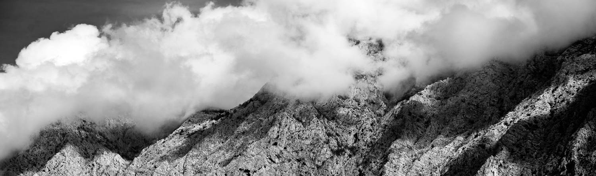 und überhaupt bildqualität. nehmen wir an, wir
wollen wandern gehen und dazu möglichst wenige objektive mitnehmen, weil
stehenbleiben zum objektivwechseln nervt, und wir bei tageswanderungen mit
der beschränkten lichtleistung eines zooms zufrieden sind. wie sieht es aber mit der abbildungsleistung aus?
es gibt 28-3oo-mm-superzooms, die 28, 5o, 9o und 3oo mm abdecken und alles
dazwischen. aber in beschränkter qualität. und dabei trotzdem stattliche
ausmaße in gewicht und länge annehmen. alternativ kann man den brennweitenbereich
noch strecken, auf 24-4oo mm, wenn man ein 24-85 oder -1o5 mm mit einem
1oo-4oo mm kombiniert – und noch schwerer trägt. die bildqualität wird ein
wenig ansteigen – vor allem im weitwinkel, aufseiten des 24-85 bzw. -1o5 mm,
jedoch nicht allzuviel: es ist das alte problem, demselben linsensystem
vergrösserung und verkleinerung zugleich abzuverlangen. also drei objektive? wenn wir erkennen, dass uns
beispielsweise 2oo mm als längste brennweite genügt, weil wir landschaften,
nicht tiere fotografieren, so können wir unser kit von hinten her
zusammenstellen und mit einem 7o-2oo mm beginnen. dem können wir nun ein
ultrakompaktes (für ein zoom) 35-7o mm f/4 hinzufügen. und am weiten ende
können wir dieses kit mit einem 2o- bzw. 16- bzw. 15-35 mm erweitern
(abhängig davon, in welchem kamerasystem und welcher epoche wir uns umsehen
möchten). alternativ können wir ein 24-7o mm wählen und, falls das jemals
doch noch zu eng sein sollte, entweder eine sehr weite festbrennweite (21 mm,
17 mm oder gar 14 mm), oder ein ultraweitwinkel-zoom. mit einer solchen kombination (16-35, 24-70,
70-200) war ich jahrelang unterwegs. und totunglücklich. die einzelnen
objektive waren schwer und klobig, wechseln unterwegs trotzdem noch nötig,
die bildqualität bescheiden, und die kreative freiheit aufgrund der
reduzierten lichtstärke gering. am ende disponierte ich radikal um. ich erstand
einen satz festbrennweiten: 15 mm, 35 mm, 9o mm, 28o mm. das 28o kam nur für
tieraufnahmen mit und wich bald einem 4oo mm. die summe aus 15, 35 und 9o mm
wog weniger als ein einziges 24-1o5 mm zoom, doch lieferte deutlich bessere
bilder und viel mehr kreative freiheit! seither habe ich das 9o/2 durch ein 7o-2oo/4
ersetzt, das kaum mehr wiegt, mit 2oo mm aber deutlich mehr kreative freiheit
auftut, gerade in der landschaftsfotografie. das 15 mm ist einem 12 mm
gewichen, doch aus rein subjektiver präferenz. 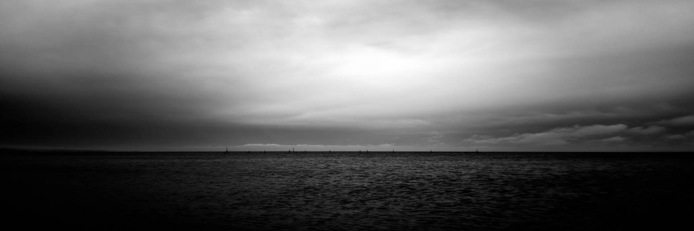 Panoramakameras Der Bildwinkel lässt sich auf zwei arten
variieren: über das Seitenverhältnis, oder über die Brennweite: Eine rotierende Panoramakamera entlockt einem
einzelnen, fixen Objektiv jeden gewünschten horizontalen Bildwinkel, von etwa
45° bis zu 36o° und mehr! Sie tut das aber auf Kosten des
Seitenverhältnisses, welches sich dabei gravierend ändert. und somit auch auf
kosten der physischen größe des belichteten filmstücks. 45° ergibt ein Bild
mit vielleicht 1:2 und also 36x72 mm abmaß; 36o° ergibt eins mit vielleicht
1:9, d.h. einen ellenlangen filmstreifen. Der VERTIKALE bildwinkel bleibt dabei übrigens
immer der gleiche, es ändert sich nur die ausdehnung nach links und nach
rechts. Variiert man stattdessen, wie bei jeder
gewöhnlichen kamera auch, die brennweite, durch wechsel des objektivs, so
bleibt das seitenverhältnis des belichteten filmstücks (oder bildwandlers),
und damit auch deren physische größe, immer gleich. Aber natürlich auf kosten
der objektive: es braucht nun eine ganze sammlung von ihnen. und mehr tele, also engere bildwinkel, ist zwar
möglich, der weitwinkel ist aber auf derzeit unter 14o° beschränkt
(fischaugenobjektive mit starker verzerrung erreichen 18o-27o°, doch
ansehnlich oder visuell realistisch ist das ergebnis nicht). indes ändert
sich sowohl der horizontale bildwinkel wie auch der vertikale: weitwinkligere
objektive zeigen nicht nur links und rechts mehr, auch oben und unten. sie
komprimieren das bild dabei indes, um also auf das immer gleich große
filmstück zu passen. 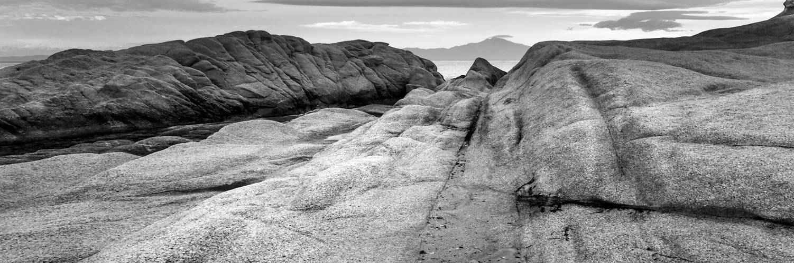 „Wie der schöne Frühlingsmorgen, den ich wirklich
genossen habe, trägt die außergewöhnliche Ruhe meine ganze Seele. Ich fühle die
Schönheit, allein an diesem Ort zu leben, für das Glück einer Seele wie mir.
Ich war sehr glücklich, ein lieber Freund, besessen von einer sanften Präsenz
und ignorierte mein Talent. Zu diesem Zeitpunkt können Sie niemals einen
einzigen Schuss zeichnen. Trotzdem habe ich das Gefühl, nie ein besserer
Künstler gewesen zu sein als jetzt.“ „Als das wunderschöne Tal um mich herum mit Dampf
gefüllt war und die meridionale Sonne auf die Oberfläche meiner
unzugänglichen Blätter traf, aber ein wilder Blick in den inneren Schutz
schlich, war ich am Tröpfelstrom. Ich fiel unter das hohe Gras. Und als ich
in der Nähe der Erde lag, bemerkte ich tausend unbekannte Pflanzen. Als ich
die winzige Erde zwischen den Stielen brüllen hörte und mich an die
unzähligen Formen von Insekten und Fliegen gewöhnte, spürte ich die Gegenwart
des Allmächtigen, der uns formte. Nach seinem eigenen Bild und dem Atem der
universellen Liebe, der uns unterstützt und unterstützt, während er in ewiger
Glückseligkeit um uns herum schwebt, und mein Freund, die Dunkelheit, ist in
meinen Augen. Wenn es so aussieht, als ob Himmel und Erde in meiner Seele
leben und ihre Kraft wie die Gestalt meiner geliebten Geliebten aufnehmen,
denke ich oft mit Bewunderung: Oh, ich habe dieses Konzept Können Sie erklären?
Da meine Seele ein unendlicher Spiegel Gottes ist, kann sie ein Spiegel
meiner Seele sein, so dass ich auf Papier alles beeindrucken kann, was ein
sehr erfülltes und warmes Leben in mir führt!“ „Ich versinke unter dem Gewicht der Pracht dieser
Visionen! Eine wunderbare Gelassenheit hat meine ganze Seele in Besitz
genommen, wie diese süßen Frühlingsmorgen, die ich von ganzem Herzen genieße.
Ich bin allein und spüre den Reiz der Existenz an diesem Ort, der für die
Glückseligkeit von Seelen wie meiner geschaffen wurde. Ich bin so glücklich,
mein lieber Freund, so versunken in das exquisite Gefühl einer bloßen ruhigen
Existenz, dass ich meine Talente vernachlässige. Ich sollte im Moment nicht in der Lage sein,
einen einzigen Strich zu zeichnen. und doch habe ich das Gefühl, nie ein
größerer Künstler zu sein als jetzt. Wenn, während das schöne Tal von Dampf um mich
herum wimmelt und die Meridiansonne auf die Oberseite des undurchdringlichen
Laubes meiner Bäume trifft und nur ein paar streunende Schimmer in das innere
Heiligtum stehlen, stürze ich mich zwischen das hohe Gras rieselnder Strom;
und wenn ich nahe an der Erde liege, werden mir tausend unbekannte Pflanzen
auffallen: Wenn ich das Summen der kleinen Welt zwischen den Stielen höre und
mich mit den unzähligen unbeschreiblichen Formen der Insekten und Fliegen
vertraut mache, dann fühle ich das Gegenwart des Allmächtigen, der uns nach
seinem eigenen Bild geformt hat, und der Atem dieser universellen Liebe, die
uns trägt und erhält, wie sie in einer Ewigkeit der Glückseligkeit um uns
herum schwebt; und dann, mein Freund, wenn Dunkelheit meine Augen überspannt
und Himmel und Erde in meiner Seele zu wohnen scheinen und ihre Kraft
absorbieren, wie die Form einer geliebten Geliebten, dann denke ich oft mit Sehnsucht:
Oh, würde ich diese Vorstellungen beschreiben könnte auf Papier alles
beeindrucken, was in mir so voll und warm lebt, dass es der Spiegel meiner
Seele sein könnte, wie meine Seele der Spiegel des unendlichen Gottes ist!“ 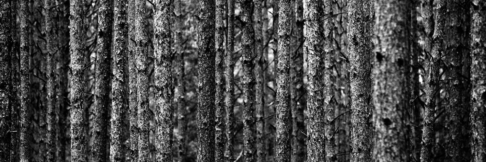 „O mein Freund - aber es ist zu viel für meine
Kraft - ich versinke unter dem Gewicht der Pracht dieser Visionen! Eine
wunderbare Gelassenheit hat meine ganze Seele in Besitz genommen, wie diese
süßen Frühlingsmorgen, die ich von ganzem Herzen genieße. Ich bin allein und
spüre den Reiz der Existenz an diesem Ort, der für die Glückseligkeit von
Seelen wie meiner geschaffen wurde. Ich bin so glücklich, mein lieber Freund,
so versunken in das exquisite Gefühl einer bloßen ruhigen Existenz, dass ich
meine Talente vernachlässige. Die Meridiansonne auf die Oberseite des
undurchdringlichen Laubes meiner Bäume trifft und nur ein paar streunende
Schimmer in das innere Heiligtum stehlen, stürze ich mich zwischen das hohe
Gras rieselnder Strom; und wenn ich nahe an der Erde liege, werden mir
tausend unbekannte Pflanzen auffallen: Wenn ich das Summen der kleinen Welt
zwischen den Stielen höre und mich mit den unzähligen unbeschreiblichen
Formen der Insekten und Fliegen vertraut mache, dann fühle ich das Gegenwart
des Allmächtigen, der uns nach seinem eigenen Bild geformt hat, und der Atem
dieser universellen Liebe, die uns trägt und erhält, wie sie in einer
Ewigkeit der Glückseligkeit um uns herum schwebt; und dann, mein Freund, wenn
Dunkelheit meine Augen überspannt und Himmel und Erde in meiner Seele zu
wohnen scheinen und ihre Kraft absorbieren, wie die Form einer geliebten
Geliebten, dann denke ich oft mit Sehnsucht: Oh, würde ich diese
Vorstellungen beschreiben könnte auf Papier alles beeindrucken, was in mir so
voll und warm lebt, dass es der Spiegel meiner Seele sein könnte, wie meine
Seele der Spiegel des unendlichen Gottes ist! Wenn, während das schöne Tal
von Dampf um mich herum wimmelt und die Meridiansonne auf die Oberseite des
undurchdringlichen Laubes meiner Bäume trifft und nur ein paar streunende
Schimmer in das innere Heiligtum stehlen, stürze ich mich zwischen das hohe
Gras rieselnder Strom; und wenn ich nahe an der Erde liege, werden mir
tausend unbekannte Pflanzen auffallen: Wenn ich das Summen der kleinen Welt
zwischen den Stielen höre und mich mit den unzähligen unbeschreiblichen Formen
der Insekten und Fliegen vertraut mache, dann fühle ich das Gegenwart des
Allmächtigen, der uns nach seinem eigenen Bild geformt hat, und der Atem
dieser universellen Liebe, die uns trägt und erhält, wie sie in einer
Ewigkeit der Glückseligkeit um uns herum schwebt; und dann, mein Freund, wenn
Dunkelheit meine Augen überspannt und Himmel und Erde in meiner Seele zu
wohnen scheinen und ihre Kraft absorbieren, wie die Form einer geliebten
Geliebten, dann denke ich oft mit Sehnsucht: Oh, würde ich diese Vorstellungen
beschreiben könnte auf dem Papier alles beeindrucken, was so voll und warm in
mir lebt, dass es der Spiegel meiner Seele sein könnte, wie meine Seele der
Spiegel ist. Der unendliche Gott! Aber es ist zu viel für meine Kraft - ich
versinke unter dem Gewicht der Pracht dieser Visionen! Eine wunderbare
Gelassenheit hat meine ganze Seele in Besitz genommen, wie diese süßen
Frühlingsmorgen, die ich von ganzem Herzen genieße. Ich bin allein und spüre
den Reiz der Existenz an diesem Ort, der für die Glückseligkeit von Seelen
wie meiner geschaffen wurde. Ich bin so glücklich, mein lieber Freund, so versunken
in das exquisite Gefühl.“ 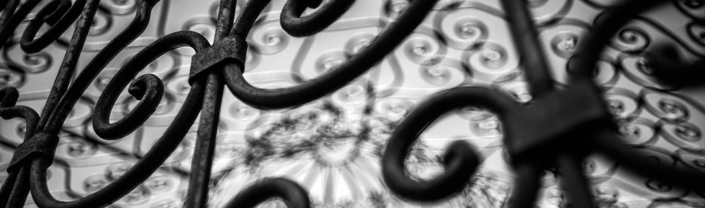 „Psychiatrische Störungen werden als Morbiditäten
bezeichnet, bei denen eine Person dauerhaft oder bei wiederholten Angriffen
ihrer moralischen Freiheit, ihrer Selbstbestimmung beraubt wird. Daher werden
Menschen mit einer solchen Krankheit auch als verkrüppelt bezeichnet.
Verrückte ruft Leute an, und zwar legal. Denn schon die Tatsache, dass die
einzelnen Seelenkräfte verrückt miteinander waren, hob die Harmonie des
Seelenlebens auf und verursachte Seelenkrankheiten. Ursachen für psychische
Erkrankungen können vom Körper ausgehen, aber in den meisten Fällen wirken
beide Arten von Ursachen zusammen, um sie zu verursachen, anstatt von der
menschlichen spirituellen Existenz auszugehen. Die Tatsache, dass psychische
Erkrankungen aufgrund von Ausbrüchen am häufigsten zwischen 25 und 35 Jahren
und zwischen 50 und 60 Jahren auftreten, verdient eine Schlussfolgerung, da
diese Altersgruppen eine besondere Bindung an Seelenstörungen geschaffen
haben. In Bezug auf das Geschlecht scheinen Frauen mehr als durchschnittliche
Männer zu sein, aber diese sind normalerweise vorzugsweise verrückt, wenn die
Unfruchtbarkeit in Bezug auf die sexuelle Entwicklung verloren geht. Über Disposition Seelendepression und
Gallenturbulenzen sind exponierter als optimistisch und kalt, und bei der
tatsächlichen Krankheit ist depressive Disposition normalerweise
deprimierend, Galle ist wütend, Optimismus ist verrückt. Und sei dumm, eher
phlegmatisch als bedeutungslos. Darüber hinaus führt eine unvollständige
Entwicklung, insbesondere ein dringendes, einseitiges oder oberflächliches
mentales Training, häufig zu einer sehr frühen psychischen Erkrankung.
Leidenschaft und Laster tun dasselbe, besonders die Laster, die gleichzeitig
den Körper betreffen und wie Betrunkene und Begierden zerrissen sind. Die Art
des Handels und der regulären Beschäftigung kann auch eine deutlich
wahrnehmbare Tendenz zu psychischen Störungen hervorrufen. Eine solche
Tendenz tritt häufig bei Menschen auf, die lange Zeit gesessen haben und
vielleicht sogar nicht entschlüsselt sind, ständig düster sind, überfordert
sind und den Schlaf auf demselben Objekt unterbrechen. Gelehrte im Salon,
auch für Kaufleute, Spekulanten, Wahrsager und andere, die aufgrund
plötzlicher Schicksalsänderungen nicht häufig gewalttätigen Emotionen
ausgesetzt sind. Mit Leuten wie Schauspielern, die oft aus ihrer
Persönlichkeit herauskommen müssen. Unter bestimmten Umständen üben manche
Menschen einen bestimmten Beruf aus, ohne internen Beruf, genau nach Bedarf,
ohne Talent, ohne das erforderliche Wissen. Menschen und Hacker, Bäckereien,
Küchen, Winzer, Schnitter, Slater usw., die in der Sonne und im Feuer
bleiben, müssen aufhören. Schließlich wird die Tendenz zu psychischen Erkrankungen
selten vererbt und ist seitdem in der Kindheit durch eine große Tendenz zu
nervöser körperlicher Konstitution und Krampfunfällen gekennzeichnet.“ 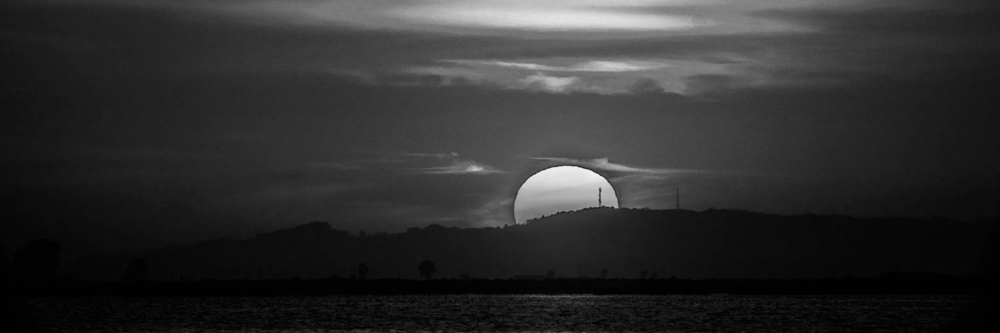 „Pathologie Körperliche und geistige Störungen
sind Kopftraumata, die Krankheiten, das Gehirn, alle wichtigen
Durchblutungsstörungen und als Reaktion darauf häufigen Ansturm,
Bauchblockaden, Hämorrhoiden oder Krankheiten verursachen können Monatliche
Flusskontrolle, Hautausschlagkontrolle, Nervenfieber, anhaltende
neurologische Erkrankungen, Sucht Wir unterscheiden normalerweise eine
besondere Art von psychischer Verwirrung, die jedoch in verschiedenen Farben
auftreten kann: Dummheit Wahnsinn, Wahnsinn, Unsinn, Willenslosigkeit,
Depression. Dabei möchten Sie jedoch keine strikte Unterscheidung treffen, da
sich alle diese Zustände mehr oder weniger unterschiedlich überschneiden. Die
Torheit selbst beruhigt sich, wandert herum, handelt durch den Humor, die
Folgen des Flirts, Gedanken, Reichtum, falsche Illusionen von Ruhm und
Wichtigkeit, feste Ideen und Ideen der richtigen, ehrlichen Interaktion,
instabile, vage, manchmal scharfe Augen, Wechselnde und gestörte
Gesichtszüge, Vernachlässigung von Anzügen oder Dandy und fantastischer Lack.
Wenn Sie nicht auf eine bestimmte Idee eingehen, können Sie sich leicht unter
dem Deckmantel der körperlichen und sogar geistigen Gesundheit täuschen,
meistens aufgrund übermäßiger geistiger Spannungen. Der zwecklose
Zerstörungstrieb, der vor allem durch Wahnsinn oder manische Jalousien
gekennzeichnet ist, unterhält einen gewertlichen Angriff und eine langweilige
Alternative. Normalerweise etwas Besonderes, weil im Angriff
selbst das Brüllen und die Schreie der Krankheit, das Leuchten ihrer
Gesichter, die wild rollenden Augen, die Wut über alles, was mit ihnen
passiert, und ihre Stärke während des Angriffs erheblich zunehmen. Es kann
nur mit Hilfe von Ausrüstung (Zwangswesten, Zwangsstühle usw.) gezähmt
werden.“ 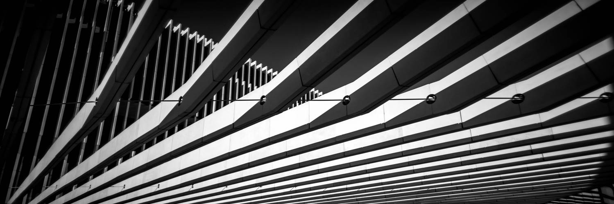 „Diese Art von psychischer Störung betrifft am
häufigsten Männer mit einem Gallentemperament und einer harten, allgemeinen
Konstitution. Verrückt, Ekstase, Ekstase, außerhalb von mir, unabhängig von
der Realität meiner eigenen Vorstellungskraft, geschaffen in einer Welt des
ständigen Erwachens, eines Traums, in einem glücklichen Leben. Wenn diese
Seele leidet, zeigt dies an, dass der Wille mehr oder weniger vollständig vom
Einfluss der Vernunft getrennt ist und nur von Emotionen abhängt. Ekstase
tritt bei Menschen mit einem optimistischen Temperament und einem lebendigen
Geist auf, die meistens durch eine lebendige und mysteriöse Erziehung
hervorgerufen werden.“ 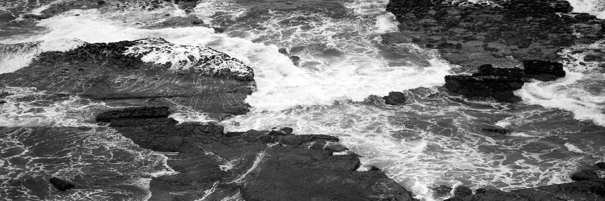 „Verlegenheit und Willenslosigkeit, nach denen
das Urteil im völligen Mangel an Selbstbestimmung liegt, sind auch an
Schmerzen und Luftmangel beteiligt. In Bezug auf seine äußeren Eigenschaften
liegt diese Art von psychischer Störung zwischen Unsinn und Depression. Manche Menschen neigen dazu, sich immer durch
äußere Zufälle und nicht durch eigene Entscheidungen selbst zu entscheiden,
und können in einigen Situationen zu einer echten Krankheit ausarten.
Völliger Gleichgültigkeit gegenüber der Außenwelt, jederzeit einen düsteren
Platz einzunehmen und sich als sinkende geschlossene auszugeben, um jederzeit
Rechtsstreitigkeiten und verzweifelten Selbstmord sowie eine Tendenz zu
Ausbrüchen zuzugeben. Es beruht hauptsächlich auf körperlichen Ursachen,
insbesondere dem pathologischen Anstieg des depressiven Temperaments mit
einer beeinträchtigten Durchblutung des Abdomens und Leberproblemen.“ 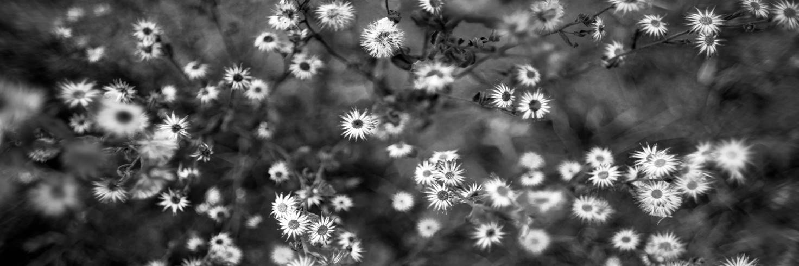 „Das Land, das dem Sonnenaufgang entgegen geht,
hat ein breiteres Verständnis von Asien. Das Meer auf der Halbinsel zwischen
dem Schwarzen, dem Zentralindischen Ozean und Gish, dessen Name Kleinasien
seit dem 4. Jahrhundert verwendet wird, ist ebenso westlich wie schmal. Es
gibt mehr als 8.000 mit Natur gesegnete Länder! M. ist die reichste und
bevölkerungsreichste Region des Osmanischen Reiches und durch Berge und
Hochebenen vom Rest Asiens getrennt. Reichs. Berge, die durch dasselbe
verlaufen, verlaufen unregelmäßig, verlaufen jedoch im Allgemeinen parallel
zur Küste. Der aufsteigende Euphratstier divergiert landesweit und führt
durch Tomorus und Sipilus nach Westen. Vom Fall Tokatos bis zum Fluss
Kisil-Irmak oder Halys und Jeschil-Irmak oder schwarz bis zum Flussmeer,
Hermus oder Sarabat und Mander Jean bis zu vielen kleinen Flüssen bis zum
Mittelmeer. Das Klima ist im Allgemeinen gesund, mild und angenehm in den
meisten rauen Tälern, hohen Bergen und oberen Ebenen, die an einigen Stellen
sehr heiß und nicht sehr vorteilhaft sind. Wichtige nationale Handelsprodukte
sind außerdem: Seide, Baumwolle, Kamelhaar, Wolle, Leder, Holz, Terpentin,
Schluck, Tabak, Safran, Storax, Rosinen, Feigen und alle Arten von Südfrüchte , Honig und Wachs. Die Berge sind sehr reich an
Metall, aber der Bergbau wird weniger betrieben. Der Handel war seit Beginn
des Landes wichtig, in dem sich der Grund für die Vortheilung befindet, aber
jetzt gibt es keine Sicherheit oder Ermutigung, keine guten Straßen oder
Kanäle, insbesondere an Land, die von Wohnwagen aus Sumana, Angola, Tokat und
Brusa betrieben werden. Ich werde. Diese Städte und viele andere Städte
liefern auch das, wonach einige Hersteller suchen, wie Baumwolle, Leinwand,
Teppiche, Marokko und Marokko, Kupfer, Glas und Stahlwaren. Die starke Bevölkerung von etwa 5 Millionen ist
sehr unterschiedlich. Viele Griechen und Armenier leben neben den Türken in
der Stadt, Europäer aus allen Handelsländern an den Küstengebieten, Horden
von Türken, die mit Kühen in der flachen Landschaft herumlaufen, und einige.
Kurdisch in den Bergen. N. versteht die sechs Justierer oder Gouverneure von
Anadori, Adana, Karamanien, Marash, Siwas und Trevisondo, die wiederum in
Riwas oder den Distrikt zusammenbrechen. Die eigentliche türkische
Hauptstadt. Anadoli ist ein Kutahije oder Kutaje mit 50.000 Einwohnern. Unser
8000F. Die alte vitinianische Brusa oder Bursa in Hyorimpas hat 70.000
Einwohner und gedeiht durch Handel und Handel. Sie ist seit langem die
Residenz der Osmanen mit wunderschönen Bädern, Springbrunnen und Wohnwagen.
Sultan. In der Nachbarschaft gibt es eine wichtige Meerschaumgrube, in der
etwa 700 Menschen arbeiten. Der Hauptort ist Sumana, in einer komfortablen
Gegend vor dem Hintergrund der gleichnamigen Bucht mit dem vortrefflichem
Hafen. Es ist das wichtigste Handelszentrum der Levante und zählt viele
Franken, die unter ihren 130.000 Einwohnern ihre eigenen Bezirke haben.
Pergams mit Schaffell Der Erfinder ist immer noch ein lebendiger Ort. Die für
ihre Kitte bekannten Inseln Resbos oder Meterin, Chios und Samos liegen vor
der Küste des Gic-Meeres. Karamaniens Iconium oder Konieh hat ungefähr 30.000
Einwohner, viele Moscheen und muslimische Schulen. Karsallier, die ehemalige
Hauptstadt von Kappadokia, hat 25.000 Einwohner. Noch wichtiger ist jedoch,
dass Tokato Ejalet ist, die wichtigste Fabrik der Siwas mit 100.000
Einwohnern, und Kisil Irmaks Arm, viele Länder werden mit Kupfer behandelt.
Das alte Galatien hat Ansila oder Angola, und 1402 wurde Timur von Sultan von
Bajasette in einer Kamelfadenfabrik mit 35.000 Einwohnern besiegt. Der
mächtige Hafen Sinab oder Sinope im alten Pafragonia an der Nordküste befasst
sich mit Wachs, Honig und Holz. Im Osten von Trevisondo befindet sich Pontus
mit 30.000 Einwohnern, der seit kurzem das wichtigste Handelszentrum an der
Schwarzmeerküste ist. Die Stadt Bunarubashi liegt an der Westküste in der
Nähe des alten Troja. Rhodes Island, einst vor der Südküste sehr berühmt.
Tarsus, die ehemalige Hauptstadt von Chilesia, hat immer noch 30.000
Einwohner. In der Nähe befindet sich Adana, eine Region, und das Gegenteil
von Zypern, eine Insel an der Küste von Kirikia.“ 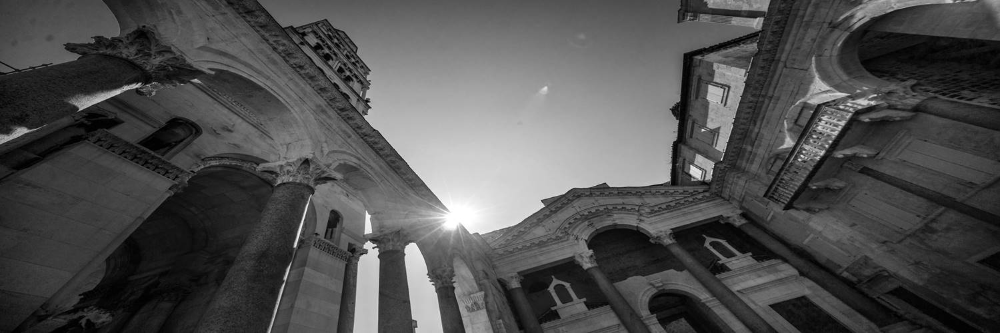 „Kleinasien umfasst antike Landschaften von
Vitinia, Pafragonia, Galatia, Prisia, Misia, Aeolis, Lydia, Ionia, Lithia,
Kalia, Pisidia, Lycaonia, Pontus, Chilisia, Panphilia, Kappadochia und
Isauria und hat eine reiche Geschichte. Bereits aus der Dunkelheit des
Troja-Pferdekrieges im 12. Jahrhundert vor Christus. Zu dieser Zeit
asiatisch. Die Griechen waren zivilisierter, wenn nicht so kriegerisch wie die
Europäer. Seitdem blühten Wissenschaft und Kunst, insbesondere Poesie,
Skulptur und Architektur, in den ionischen Küstenstädten auf. Prisian mit
einer einzigartigen Kultur galt schon in der Antike als älter als die
Ägypter. Lydia erlangte im 6. Jahrhundert Macht und Pracht und wurde von den
Persern erobert. Die Perser regierten zwei Jahrhunderte lang und führten
einen fast ununterbrochenen Krieg mit den Griechen, bis Alexander das Reich
zerstörte. Die Nachfolger gründeten dort ein Reich. Danach wurde das Königreich
Pergams geboren. Dort fand er einen Ort, an dem die Wissenschaft florierte,
und sein Herrscher wurde als römischer Freund und Verbündeter geschätzt und
mächtig, der jetzt einen festen Stand hat.“ 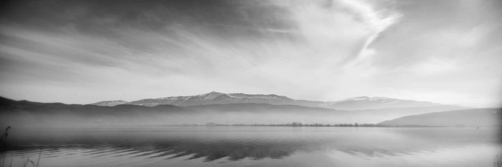 „Nach der Niederlage von Mithridates blieb ganz
Kleinasien Staat, und hier verbreitete sich das Christentum in den ersten
Jahrhunderten schneller als anderswo, und einige der vielen kirchlichen
Versammlungen, die später in einigen Städten Kleinasiens abgehalten wurden,
hatten einen großen Einfluss auf die Glaubenslehre. Es war. .. Kleinasien ist
weit von Arabien entfernt und wurde seit der Teilung Roms durch das Meer und
seinen Hauptknotenpunkt Stier vor äußeren Feinden geschützt. Das Weltreich,
das Teil des Byzantinischen Reiches ist, leidet vorübergehend unter den
Sarasen. Später kamen die Türken aus dem Nordosten, eroberten Persien,
überquerten den Euphrat und bauten das alte Panfilia, Pisidia, Likaonia und
das Mchtiges-Reich von Calamania oder der Region, die Kappadochia selbst
versteht. [245] .. Auf dem Weg ins Gelobte Land traf das erste Kruzifix diese
Türken, deren Hauptstadt Iconium oder Konieh war, und verursachte ihnen große
Verluste, bis sie in das Osmanische Reich fielen. Die Familie vereinte alle
kriegerischen Stämme der Türken und bildete erneut ein mächtiges Reich. Als
die Armee bereits im 14. Jahrhundert nach Europa zog und Adrianopur ihre
Hauptstadt wurde, blieb ihr Zentrum in Kleinasien. Seit Mitte des 15.
Jahrhunderts wird das ganze Land von der Türkei dominiert.“ 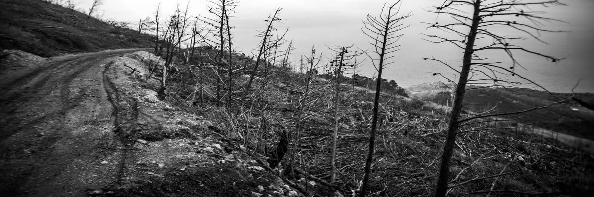 |
|
|
|
|
|
|
|
|
|
|
|
|
|
|
|
|
|
© 2oo2-2o21 Christian Schnalzger, all
rights reserved.